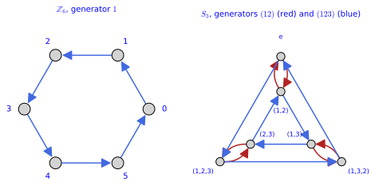
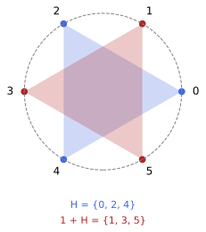
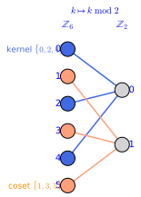
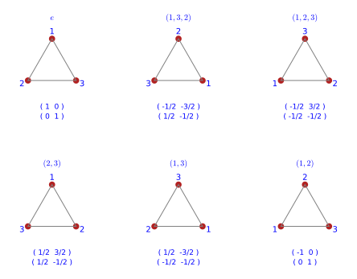

Group theory
Groups are the algebra of symmetry. Whenever a set of transformations can be composed, undone and contains the transformation that does nothing, it forms a group, and much of what can be said about a symmetric object follows from the multiplication table of its group alone. This chapter has four sections. Groups defines groups, abelian groups, orders, subgroups, generated subgroups and normal subgroups, with the integers modulo n, the permutation group S_3 and the rotation groups as running examples. Cosets and quotient groups slices a group into the cosets of a subgroup, proves Lagrange’s theorem, turns the cosets of a normal subgroup into a group, and introduces group actions with their orbits and stabilisers. Homomorphisms studies the maps that respect multiplication, their kernels, isomorphisms, the first isomorphism theorem and conjugation. Representations and Schur’s lemma lets a group act by matrices, splits representations into irreducible pieces and proves Schur’s lemma on the maps that commute with an irreducible representation. Every statement is followed by three examples and three exercises with hidden solutions, and many of the computations are carried out with Sage’s group theory modules.
Groups
Symmetry is the organising principle of much of mathematics and physics: the isometries of a space form a group, the transformations that leave the equations of a field theory unchanged form a group, and conserved quantities come from these groups. This section defines groups and subgroups and works every notion on small finite groups and on the rotation groups, so that the Lie groups of Lie groups and the coset spaces of Coset spaces arrive with their algebra already familiar.
For more on this topic, see Mukunda and Chaturvedi (2022, Ch. 2).
Groups
The transformations of an object that preserve its shape can be performed one after the other, undone, and include the transformation that leaves everything in place. The definition below keeps only these three properties and forgets what is being transformed.
Definition 1 (Group) A group is a set G with a multiplication (g, h) \mapsto gh that is associative, (gh)k = g(hk), has an identity e with eg = ge = g, and has an inverse g^{-1} for every g with gg^{-1} = g^{-1}g = e.
Veriphy. Pending.
Lean. Pending.
Sage. Pending.
The first example is arithmetic on a clock face. Adding hours modulo n is associative, has 0 as identity, and every hour can be undone by going forward the remaining hours, so the residues modulo n form a group.
Example 1 (Integers modulo n) \mathbb{Z}_n = \{0, 1, \dots, n-1\} with addition modulo n (Example 31 of Sets, relations and topology) is a group: the identity is 0 and the inverse of k is n - k. The rotations of a regular hexagon by multiples of 60^\circ form a group with the same multiplication table as \mathbb{Z}_6 (Figure 1).
The second example has a multiplication that is composition of maps. Composition of functions is always associative, so bijections of a finite set form a group as soon as the identity map and inverse maps are included.
Example 2 (Permutations) The bijections of \{1, 2, 3\} to itself (Example 13 of Sets, relations and topology) form the symmetric group S_3 under composition, with the identity map as identity and the inverse map as inverse; the rotations and reflections of a triangle form a group with the same table (Exercise 19). In general the permutations of n objects form S_n.
The third example brings in infinite groups, which are the ones met most often in geometry. Matrices compose by matrix multiplication, which is associative, and the invertible ones have inverses by definition.
Example 3 (Matrix groups) The invertible n \times n real matrices form the general linear group GL(n, \mathbb{R}) under matrix multiplication; the identity is the unit matrix and the inverse the matrix inverse. The rotations of the plane, R(\alpha) = \begin{pmatrix} \cos\alpha & -\sin\alpha \\ \sin\alpha & \cos\alpha \end{pmatrix}, form SO(2) with R(\alpha)R(\beta) = R(\alpha + \beta); the rotations of space form SO(3); the matrices Equation 5 of Differential geometry form SU(2).
Deciding whether a set with an operation is a group means checking each axiom, and the failures are as instructive as the successes. The first exercise tests four candidates, some of which miss one axiom only.
Exercise 1 (Checking the axioms) Decide whether the following are groups: the non-zero real numbers under multiplication; the integers under subtraction; the 2 \times 2 real matrices under matrix multiplication; the rotations and reflections of the plane that fix the origin.
Non-zero reals under multiplication: yes, abelian. Integers under subtraction: no, since (a - b) - c \neq a - (b - c) and there is no identity (a - e = a gives e = 0 but 0 - a \neq a). All 2 \times 2 matrices: no, the zero matrix has no inverse; the invertible ones form GL(2, \mathbb{R}). Rotations and reflections fixing the origin: yes, the orthogonal group O(2), non-abelian, with SO(2) as a normal subgroup of index 2.
Multiplication modulo n is associative and has the identity 1, so the only question for the non-zero residues is whether every element has an inverse. The second exercise shows that the answer depends on whether n is prime.
Exercise 2 (Multiplication modulo 5 and modulo 6) Show that \{1, 2, 3, 4\} is a group under multiplication modulo 5 by writing its multiplication table and finding every inverse. Explain why \{1, 2, 3, 4, 5\} is not a group under multiplication modulo 6.
Modulo 5 the product of two non-zero residues is non-zero (5 is prime), so the set is closed; the inverses are 1^{-1} = 1, 2^{-1} = 3, 3^{-1} = 2, 4^{-1} = 4, read off the table as the column containing 1. Modulo 6 the set is not closed, 2 \cdot 3 = 0, and 2, 3, 4 have no inverse; only \{1, 5\}, the residues coprime to 6, form a group. With Sage’s Zmod:
for n in (5, 6):
R = Zmod(n); X = [R(k) for k in range(1, n)]
closed = all(a * b != 0 for a in X for b in X)
inv = {int(a): [int(b) for b in X if a * b == 1] for a in X}
print("n = %d: closed under multiplication: %s ; inverses: %s" % (n, closed, inv))
print(" every element has an inverse:", all(len(v) == 1 for v in inv.values()))
R = Zmod(5)
print("multiplication table modulo 5 on {1,2,3,4}:")
for a in range(1, 5):
print(" ", [int(R(a) * R(b)) for b in range(1, 5)])
print("2 * 3 = 0 modulo 6, so {1,...,5} is not closed:", Zmod(6)(2) * Zmod(6)(3) == 0)
print("Sage's group of units of Z_5:", [int(u) for u in Zmod(5).list_of_elements_of_multiplicative_group()], "; of Z_6:", [int(u) for u in Zmod(6).list_of_elements_of_multiplicative_group()])Output:
n = 5: closed under multiplication: True ; inverses: {1: [1], 2: [3], 3: [2], 4: [4]}
every element has an inverse: True
n = 6: closed under multiplication: False ; inverses: {1: [1], 2: [], 3: [], 4: [], 5: [5]}
every element has an inverse: False
multiplication table modulo 5 on {1,2,3,4}:
[1, 2, 3, 4]
[2, 4, 1, 3]
[3, 1, 4, 2]
[4, 3, 2, 1]
2 * 3 = 0 modulo 6, so {1,...,5} is not closed: True
Sage's group of units of Z_5: [1, 2, 3, 4] ; of Z_6: [1, 5]The axioms ask for an identity and for inverses but do not say that these are unique. The third exercise derives uniqueness from the axioms, together with the rule for inverting a product that is used throughout the chapter.
Exercise 3 (Uniqueness of the identity and of inverses) Show from the axioms that a group has only one identity, that each element has only one inverse, and that (gh)^{-1} = h^{-1}g^{-1}. Deduce that the equation gx = k has exactly one solution x for given g, k.
If e and e' are identities then e = ee' = e'. If h and h' are inverses of g then h = he = h(gh') = (hg)h' = eh' = h'. Since (gh)(h^{-1}g^{-1}) = g(hh^{-1})g^{-1} = gg^{-1} = e, and similarly in the other order, h^{-1}g^{-1} is the inverse of gh: the order is reversed, as for putting on and taking off socks and shoes. Finally x = g^{-1}k solves gx = k, and any solution satisfies x = g^{-1}(gx) = g^{-1}k. So every row of a multiplication table contains each element exactly once.
In a group the order of the factors can matter, as the matrix examples already suggest. Groups in which it never matters are singled out by the next definition.
Definition 2 (Abelian group) A group is abelian (or commutative) if gh = hg for all g, h \in G.
Veriphy. Pending.
Lean. Pending.
Sage. Pending.
The groups built from addition of numbers or of angles are abelian, because addition commutes. The example also identifies the rotations of the plane with the unit complex numbers, two descriptions of one abelian group.
Example 4 (\mathbb{Z}_n, SO(2) and U(1)) \mathbb{Z}_n is abelian, since addition commutes; so is SO(2), since R(\alpha)R(\beta) = R(\alpha + \beta) = R(\beta)R(\alpha), and the unit complex numbers U(1) = \{e^{i\alpha}\} under multiplication, which e^{i\alpha} \mapsto R(\alpha) identifies with SO(2). U(1) is the gauge group of electromagnetism and of Part III.
Permutations of three objects already fail to commute. Composing two transpositions in the two possible orders gives the two different three-cycles, which is the smallest instance of a non-abelian group.
Example 5 (S_3 is not abelian) (1\,2)(1\,3) \neq (1\,3)(1\,2): one composition is the cycle (1\,2\,3) and the other (1\,3\,2) (Proposition 1, Exercise 19). S_3 is the smallest non-abelian group, and Figure 1 shows its Cayley graph next to that of \mathbb{Z}_6.
Rotations of space behave like permutations rather than like rotations of the plane. Two quarter turns about different axes, applied in the two orders, leave an object in different positions.
Example 6 (SO(3) is not abelian) A rotation by 90^\circ about the X-axis followed by one about the Z-axis differs from the reverse order, as turning a book shows; SU(2) is not abelian either. Non-abelian gauge groups are the subject of Part IV.

figures/cayley_graph.sage.
Interactive figure (drag to rotate or zoom); the static version is above.
The interactive version shows the full multiplication table of S_3: the cell in row g and column h holds the product gh (first h, then g), and hovering a cell displays it. The rows and columns list the three-cycles before the transpositions, and the colours, blue for even and orange for odd products, split the table into four blocks.
Commutativity can be tested pair by pair, and for a non-abelian group it is natural to ask how many pairs still commute. The first exercise does this count with Sage for five groups of orders 4, 6 and 8.
Exercise 4 (Counting commuting pairs) For \mathbb{Z}_6, \mathbb{Z}_2 \times \mathbb{Z}_2, S_3, the symmetry group D_4 of a square and the quaternion group Q_8 = \{\pm 1, \pm i, \pm j, \pm k\}, decide which are abelian and count the ordered pairs (g, h) with gh = hg.
\mathbb{Z}_6 and \mathbb{Z}_2 \times \mathbb{Z}_2 are abelian, so all 36 and 16 pairs commute. In S_3 the number of commuting pairs is the sum over g of the number of elements commuting with g: the identity commutes with all 6, each transposition only with e and itself, each three-cycle with e and the two three-cycles, so the count is 6 + 3 \cdot 2 + 2 \cdot 3 = 18 of 36. D_4 and Q_8 both give 40 of 64, although they are different groups:
groups = [("Z_6", CyclicPermutationGroup(6)), ("Z_2 x Z_2", KleinFourGroup()), ("S_3", SymmetricGroup(3)),
("D_4", DihedralGroup(4)), ("Q_8", QuaternionGroup())]
for name, G in groups:
els = G.list()
comm = sum(1 for g in els for h in els if g * h == h * g)
print("%-10s order %2d abelian: %-5s commuting pairs: %2d of %2d" % (name, G.order(), G.is_abelian(), comm, len(els)**2))Output:
Z_6 order 6 abelian: True commuting pairs: 36 of 36
Z_2 x Z_2 order 4 abelian: True commuting pairs: 16 of 16
S_3 order 6 abelian: False commuting pairs: 18 of 36
D_4 order 8 abelian: False commuting pairs: 40 of 64
Q_8 order 8 abelian: False commuting pairs: 40 of 64A simple condition on the elements can force a group to be abelian. The second exercise asks for the short computation that shows this when every element is its own inverse.
Exercise 5 (Groups of exponent two) Show that if g^2 = e for every element g of a group, the group is abelian. Give an example of order 4 and check that S_3 does not satisfy the hypothesis.
Each element is its own inverse, g^{-1} = g. Then gh = (gh)^{-1} = h^{-1}g^{-1} = hg, using Exercise 3 for the inverse of a product. The group \mathbb{Z}_2 \times \mathbb{Z}_2 = \{(0,0), (1,0), (0,1), (1,1)\} with componentwise addition modulo 2 is an example of order 4. In S_3 the three-cycle (1\,2\,3) has (1\,2\,3)^2 = (1\,3\,2) \neq e, so the hypothesis fails, as it must since S_3 is not abelian.
The failure of commutativity is measured by the commutator ghg^{-1}h^{-1}, which equals e exactly when g and h commute. The third exercise computes it in a group of triangular matrices that contains an abelian subgroup.
Exercise 6 (Commutators of triangular matrices) Show that the upper triangular matrices \begin{pmatrix} a & b \\ 0 & d \end{pmatrix} with ad \neq 0 form a group under matrix multiplication, compute the commutator of g = \begin{pmatrix} a & 0 \\ 0 & 1 \end{pmatrix} and h = \begin{pmatrix} 1 & b \\ 0 & 1 \end{pmatrix}, and show that the matrices with a = d = 1 multiply by adding the entries b, so that they form an abelian group.
The product of two upper triangular matrices is upper triangular with diagonal entries multiplied, \begin{pmatrix} a & b \\ 0 & d \end{pmatrix}\begin{pmatrix} a' & b' \\ 0 & d' \end{pmatrix} = \begin{pmatrix} aa' & ab' + bd' \\ 0 & dd' \end{pmatrix}, and the inverse \begin{pmatrix} 1/a & -b/(ad) \\ 0 & 1/d \end{pmatrix} is again upper triangular. Then ghg^{-1}h^{-1} = \begin{pmatrix} 1 & ab \\ 0 & 1 \end{pmatrix}\begin{pmatrix} 1 & -b \\ 0 & 1 \end{pmatrix} = \begin{pmatrix} 1 & (a - 1)b \\ 0 & 1 \end{pmatrix}, which is the identity only if a = 1 or b = 0: the group is not abelian. For a = d = 1 the product formula gives the entry b + b', so these matrices multiply as the real numbers add, and they commute.
Repeating a single element of a finite group must eventually return to the identity, because there are only finitely many powers. The next definition measures how long that takes, and how large the group is.
Definition 3 (Order) The order |G| of a group is its number of elements (possibly infinite). The order of an element g is the least n > 0 with g^n = e, or infinite if there is none.
Veriphy. Pending.
Lean. Pending.
Sage. Pending.
The symmetric group is small enough to list completely, and its elements fall into three kinds by their order. The example reads the orders off the cycle structure of each permutation.
Example 7 (Orders in S_3) |S_3| = 6 (Proposition 1); the identity has order 1, the three transpositions (1\,2), (1\,3), (2\,3) have order 2 and the two three-cycles have order 3 (Exercise 19). Every order divides 6, as Lagrange’s theorem of Section 1.2 explains.
In \mathbb{Z}_6 the n-th power of an element k is the sum nk, so the order of k is the least n with nk divisible by 6. The example lists these orders and finds an element whose order is the order of the group.
Example 8 (Orders in \mathbb{Z}_6) |\mathbb{Z}_6| = 6; the element 1 has order 6, 2 and 4 have order 3, 3 has order 2 and 0 has order 1. The element 1 generates the whole group, which is what makes \mathbb{Z}_6 cyclic.
In an infinite group the order of an element can be finite or infinite. Rotations of the plane show both possibilities, depending on whether the angle is a rational multiple of a full turn.
Example 9 (Infinite groups) SO(2), SO(3), SU(2) and (\mathbb{Z}, +) have infinite order; in SO(2) the rotation by 2\pi/n has order n and the rotation by an irrational multiple of \pi has infinite order. In SU(2) the element -1 has order 2 and e^{tT_3} has order 4\pi/t when that is an integer (The exponential map).
The orders of the elements of a cyclic group follow a simple pattern governed by greatest common divisors. The first exercise computes them for \mathbb{Z}_{12} and counts how many elements have each order.
Exercise 7 (Orders in \mathbb{Z}_{12}) Find the order of every element of \mathbb{Z}_{12}, count the elements of each order, and check that the order of k is 12/\gcd(k, 12).
The order of k is the least n > 0 with 12 \mid nk, which is 12/\gcd(k, 12). There is one element of order 1 (0), one of order 2 (6), two of order 3 (4, 8), two of order 4 (3, 9), two of order 6 (2, 10) and four of order 12 (1, 5, 7, 11); the number of elements of order d is Euler’s \varphi(d), the number of residues coprime to d:
R = Zmod(12)
orders = {k: R(k).additive_order() for k in range(12)}
print("orders:", orders)
from collections import Counter
cnt = Counter(orders.values())
print("number of elements of each order:", dict(sorted(cnt.items())))
print("each order divides 12:", all(12 % o == 0 for o in orders.values()))
print("order of k equals 12/gcd(k,12):", all(orders[k] == 12 // gcd(k, 12) for k in range(12)))
print("number of elements of order d equals Euler's phi(d):", all(cnt[d] == euler_phi(d) for d in divisors(12)))Output:
orders: {0: 1, 1: 12, 2: 6, 3: 4, 4: 3, 5: 12, 6: 2, 7: 12, 8: 3, 9: 4, 10: 6, 11: 12}
number of elements of each order: {1: 1, 2: 1, 3: 2, 4: 2, 6: 2, 12: 4}
each order divides 12: True
order of k equals 12/gcd(k,12): True
number of elements of order d equals Euler's phi(d): TrueInverting or conjugating an element should not change how long its powers take to return to the identity. The second exercise proves this and uses it to compare the orders of gh and hg.
Exercise 8 (Orders of inverses and conjugates) Show that g, g^{-1} and kgk^{-1} have the same order for all g, k, and deduce that gh and hg have the same order. Check the last statement on g = (1\,2), h = (1\,3) in S_3.
(g^{-1})^n = (g^n)^{-1} is e exactly when g^n = e. For the conjugate, (kgk^{-1})^n = kg^nk^{-1} because the inner factors k^{-1}k cancel, and kg^nk^{-1} = e exactly when g^n = e. Since hg = g^{-1}(gh)g is a conjugate of gh, the two have the same order. For the two transpositions, gh and hg are the two three-cycles (Example 5), both of order 3, although they are different elements.
A power of an element has an order determined by the order of the element and the exponent. The third exercise derives the formula and recovers the pattern found for \mathbb{Z}_{12}.
Exercise 9 (The order of a power) Let g have finite order n. Show that g^m = e exactly when n \mid m, and that g^k has order n/\gcd(n, k). How many elements of a cyclic group of order n have order n?
Write m = qn + r with 0 \le r < n; then g^m = (g^n)^qg^r = g^r, which is e only if r = 0 by minimality of n. With d = \gcd(n, k), (g^k)^m = e iff n \mid km iff (n/d) \mid (k/d)m iff (n/d) \mid m, because n/d and k/d are coprime; so the order of g^k is n/d. In a cyclic group \langle g \rangle of order n the element g^k has order n exactly when \gcd(n, k) = 1, which happens for \varphi(n) values of k; in \mathbb{Z}_{12} these are 1, 5, 7, 11 (Exercise 7).
Subgroups
Inside a group there are often smaller sets of elements that are groups by themselves, such as the rotations among all the symmetries of a triangle. The next definition makes this precise.
Definition 4 (Subgroup) A subgroup H \subseteq G is a subset closed under multiplication and inverses (hence containing e); it is a group with the restricted multiplication, written H \leq G.
Veriphy. Pending.
Lean. Pending.
Sage. Pending.
For \mathbb{Z}_6 the subgroups are found by closing small sets under addition. The example shows two subgroups and one subset that fails to be a subgroup.
Example 10 (Subgroups of \mathbb{Z}_6) \{0, 2, 4\} and \{0, 3\} are subgroups of \mathbb{Z}_6, closed under addition modulo 6; \{0, 1\} is not, since 1 + 1 = 2 is missing. The subgroups of \mathbb{Z}_6 have orders 1, 2, 3, 6 (Exercise 10).
The symmetric group has subgroups of two different shapes. Each transposition together with the identity forms a subgroup of order two, and the three-cycles together with the identity form a subgroup of order three.
Example 11 (Subgroups of S_3) \{e, (1\,2)\}, \{e, (1\,3)\}, \{e, (2\,3)\} and A_3 = \{e, (1\,2\,3), (1\,3\,2)\} are the proper non-trivial subgroups of S_3 (Exercise 10); A_3, the even permutations, is the alternating group, of order 3 (Proposition 1).
Among the infinite groups the most important subgroups are the rotations about a fixed axis. The example also names the subgroups that later describe the sphere as a quotient.
Example 12 (SO(2) \subset SO(3) and U(1) \subset SU(2)) The rotations about the Z-axis form a subgroup SO(2) of SO(3); the matrices e^{tT_3} = \operatorname{diag}(e^{-it/2}, e^{it/2}) form a subgroup U(1) of SU(2). These are the subgroups by which the sphere is a quotient, S^2 = SO(3)/SO(2) \cong SU(2)/U(1) (Coset spaces).
The subgroups of a small group can be listed exhaustively, and the list reveals which subsets are closed. The first exercise does this for S_3 and \mathbb{Z}_6 with Sage.
Exercise 10 (Subgroups of S_3 and \mathbb{Z}_6) List all subgroups of S_3 with their orders, decide which are normal, and compare the orders of the subgroups of \mathbb{Z}_6 with the divisors of 6.
S3 = SymmetricGroup(3)
for H in S3.subgroups():
print("subgroup of order", H.order(), ":", H.list(), "; normal:", H.is_normal(S3))
A3 = S3.subgroup([S3((1, 2, 3))])
print("the subgroup generated by (1,2,3) is A_3 of order", A3.order(), "; the one generated by (1,2) has order", S3.subgroup([S3((1, 2))]).order())
Z6 = CyclicPermutationGroup(6)
print("orders of the subgroups of Z_6:", sorted(H.order() for H in Z6.subgroups()), " (every divisor of 6, all normal:", all(H.is_normal(Z6) for H in Z6.subgroups()), ")")
print("Lagrange: every subgroup order divides 6:", all(6 % H.order() == 0 for H in S3.subgroups()))Output:
subgroup of order 1 : [()] ; normal: True
subgroup of order 2 : [(), (2,3)] ; normal: False
subgroup of order 2 : [(), (1,2)] ; normal: False
subgroup of order 2 : [(), (1,3)] ; normal: False
subgroup of order 3 : [(), (1,2,3), (1,3,2)] ; normal: True
subgroup of order 6 : [(), (1,3,2), (1,2,3), (2,3), (1,3), (1,2)] ; normal: True
the subgroup generated by (1,2,3) is A_3 of order 3 ; the one generated by (1,2) has order 2
orders of the subgroups of Z_6: [1, 2, 3, 6] (every divisor of 6, all normal: True )
Lagrange: every subgroup order divides 6: TrueChecking closure under products and under inverses separately is often more work than needed. The second exercise derives a one-step test and applies it to an infinite discrete group and to a group of rotations.
Exercise 11 (The one-step subgroup test) Show that a non-empty subset H of a group is a subgroup exactly when gh^{-1} \in H for all g, h \in H. Use the test to show that the multiples n\mathbb{Z} form a subgroup of (\mathbb{Z}, +) and that the rotations R(\alpha) form a subgroup of GL(2, \mathbb{R}).
A subgroup clearly passes the test. Conversely, take any h \in H: then hh^{-1} = e \in H, next eh^{-1} = h^{-1} \in H, and finally g(h^{-1})^{-1} = gh \in H; so H contains e and is closed under inverses and products. In additive notation the test reads a - b \in H, and an - bn = (a - b)n \in n\mathbb{Z}. For rotations R(\alpha)R(\beta)^{-1} = R(\alpha)R(-\beta) = R(\alpha - \beta) is again a rotation.
Groups of order eight already have a rich collection of subgroups. The third exercise lists those of the symmetry group of a square and sorts them by order and by whether they are cyclic.
Exercise 12 (Subgroups of the symmetries of a square) The dihedral group D_4 consists of the four rotations and four reflections of a square, acting on its vertices 1, 2, 3, 4. List its subgroups with Sage, sort them by order, and describe the three subgroups of order 4 geometrically.
There are ten subgroups: the trivial one, five of order 2 (the half turn and the four reflections, each with e), three of order 4 and D_4 itself. The subgroups of order 4 are the rotations \{e, r, r^2, r^3\}, which is cyclic, and two non-cyclic ones: the half turn with the two diagonal reflections, and the half turn with the two reflections through the midpoints of opposite edges. Every order divides 8:
D4 = DihedralGroup(4)
subs = D4.subgroups()
print("D_4 =", D4.list())
print("number of subgroups:", len(subs))
for H in subs:
print(" order %d: %s cyclic: %s" % (H.order(), [str(h) for h in H], H.is_cyclic()))
from collections import Counter
print("subgroups per order:", dict(sorted(Counter(H.order() for H in subs).items())))Output:
D_4 = [(), (1,3)(2,4), (1,4,3,2), (1,2,3,4), (2,4), (1,3), (1,4)(2,3), (1,2)(3,4)]
number of subgroups: 10
order 1: ['()'] cyclic: True
order 2: ['()', '(1,3)(2,4)'] cyclic: True
order 2: ['()', '(2,4)'] cyclic: True
order 2: ['()', '(1,3)'] cyclic: True
order 2: ['()', '(1,2)(3,4)'] cyclic: True
order 2: ['()', '(1,4)(2,3)'] cyclic: True
order 4: ['()', '(1,3)(2,4)', '(2,4)', '(1,3)'] cyclic: False
order 4: ['()', '(1,3)(2,4)', '(1,4,3,2)', '(1,2,3,4)'] cyclic: True
order 4: ['()', '(1,3)(2,4)', '(1,2)(3,4)', '(1,4)(2,3)'] cyclic: False
order 8: ['()', '(1,3)(2,4)', '(1,4,3,2)', '(1,2,3,4)', '(2,4)', '(1,3)', '(1,4)(2,3)', '(1,2)(3,4)'] cyclic: False
subgroups per order: {1: 1, 2: 5, 4: 3, 8: 1}A subgroup can be described by listing its elements, or more economically by a few elements from which all others are obtained by multiplication. The next definition names the subgroup reached this way.
Definition 5 (Generated subgroup) The subgroup generated by elements g_1, \dots, g_k, written \langle g_1, \dots, g_k \rangle, is the smallest subgroup containing them: the set of all finite products of the g_i and their inverses. A group generated by one element is cyclic.
Veriphy. Pending.
Lean. Pending.
Sage. Pending.
In \mathbb{Z}_6 the subgroup generated by one element consists of its multiples. The example finds which elements generate the whole group and which generate proper subgroups.
Example 13 (Cyclic subgroups of \mathbb{Z}_6) \langle 2 \rangle = \{0, 2, 4\} and \langle 3 \rangle = \{0, 3\}; \langle 1 \rangle = \langle 5 \rangle = \mathbb{Z}_6. A cyclic subgroup \langle g \rangle has order equal to the order of g.
The symmetric group is not cyclic, since no element has order six, but two elements suffice. The example compares the subgroups generated by one and by two permutations.
Example 14 (Generators of S_3) \langle (1\,2\,3) \rangle = A_3 and \langle (1\,2) \rangle = \{e, (1\,2)\} (Exercise 10), while \langle (1\,2), (1\,2\,3) \rangle = S_3: the two generators of Figure 1 reach every element.
In a continuous group a single element generates only a discrete set of powers. Whole circles of rotations need a different kind of generator, which the example introduces.
Example 15 (One-parameter subgroups) In SO(2) the rotation by 60^\circ generates a cyclic subgroup of order 6, a copy of \mathbb{Z}_6; in SO(3) the rotations R(t) about a fixed axis form the subgroup SO(2), which is not generated by finitely many elements but by the Lie algebra element L_3 through the exponential map (The exponential map).
Which elements generate a cyclic group is decided by the order formula of Exercise 9. The first exercise lists the cyclic subgroups of \mathbb{Z}_{12} and its generators.
Exercise 13 (Generators of \mathbb{Z}_{12}) Compute \langle k \rangle for every k \in \mathbb{Z}_{12}, find the elements that generate \mathbb{Z}_{12}, and show that there is exactly one cyclic subgroup for each divisor of 12.
\langle k \rangle consists of the multiples of \gcd(k, 12) and has 12/\gcd(k, 12) elements; it is all of \mathbb{Z}_{12} exactly for k = 1, 5, 7, 11. The distinct subgroups are \langle d \rangle for the divisors d = 1, 2, 3, 4, 6, 12 (with \langle 12 \rangle = \langle 0 \rangle = \{0\}), of orders 12, 6, 4, 3, 2, 1:
R = Zmod(12)
def gen_sub(k):
S = {R(0)}; x = R(k)
while x not in S:
S.add(x); x += R(k)
return sorted(int(s) for s in S)
for k in range(12):
print("<%2d> = %s" % (k, gen_sub(k)))
gens = [k for k in range(12) if len(gen_sub(k)) == 12]
print("generators of Z_12:", gens, "; these are the k with gcd(k,12) = 1:", gens == [k for k in range(12) if gcd(k, 12) == 1])
print("distinct cyclic subgroups:", sorted({tuple(gen_sub(k)) for k in range(12)}, key=len), "; one for each divisor of 12:", divisors(12))Output:
< 0> = [0]
< 1> = [0, 1, 2, 3, 4, 5, 6, 7, 8, 9, 10, 11]
< 2> = [0, 2, 4, 6, 8, 10]
< 3> = [0, 3, 6, 9]
< 4> = [0, 4, 8]
< 5> = [0, 1, 2, 3, 4, 5, 6, 7, 8, 9, 10, 11]
< 6> = [0, 6]
< 7> = [0, 1, 2, 3, 4, 5, 6, 7, 8, 9, 10, 11]
< 8> = [0, 4, 8]
< 9> = [0, 3, 6, 9]
<10> = [0, 2, 4, 6, 8, 10]
<11> = [0, 1, 2, 3, 4, 5, 6, 7, 8, 9, 10, 11]
generators of Z_12: [1, 5, 7, 11] ; these are the k with gcd(k,12) = 1: True
distinct cyclic subgroups: [(0,), (0, 6), (0, 4, 8), (0, 3, 6, 9), (0, 2, 4, 6, 8, 10), (0, 1, 2, 3, 4, 5, 6, 7, 8, 9, 10, 11)] ; one for each divisor of 12: [1, 2, 3, 4, 6, 12]Two well-chosen permutations can generate a large group, while other pairs generate only a small one. The second exercise explores this in S_4, the group of order 24 of permutations of four objects.
Exercise 14 (Generating subgroups of S_4) With Sage, find the orders of \langle (1\,2), (1\,2\,3\,4) \rangle, \langle (1\,2)(3\,4), (1\,3)(2\,4) \rangle, \langle (1\,2\,3\,4) \rangle and \langle (1\,2\,3), (1\,2)(3\,4) \rangle in S_4, and decide which of them are cyclic or abelian.
A transposition and a four-cycle generate all of S_4 (order 24). The two double transpositions generate the Klein four-group \{e, (1\,2)(3\,4), (1\,3)(2\,4), (1\,4)(2\,3)\}, abelian of order 4 but not cyclic, since every element other than e has order 2. The four-cycle generates a cyclic group of order 4, and a three-cycle with a double transposition generates the even permutations A_4, of order 12:
S4 = SymmetricGroup(4)
G1 = S4.subgroup([S4("(1,2)"), S4("(1,2,3,4)")])
print("<(1,2), (1,2,3,4)> has order", G1.order(), "; equals S_4:", G1.order() == S4.order())
V = S4.subgroup([S4("(1,2)(3,4)"), S4("(1,3)(2,4)")])
print("<(1,2)(3,4), (1,3)(2,4)> =", [str(v) for v in V], "; order", V.order(), "; abelian:", V.is_abelian(), "; cyclic:", V.is_cyclic())
C = S4.subgroup([S4("(1,2,3,4)")])
print("<(1,2,3,4)> =", [str(c) for c in C], "; order", C.order())
G3 = S4.subgroup([S4("(1,2,3)"), S4("(1,2)(3,4)")])
print("<(1,2,3), (1,2)(3,4)> has order", G3.order(), "; it is the alternating group A_4 (the even permutations):", set(G3) == {g for g in S4 if g.sign() == 1})Output:
<(1,2), (1,2,3,4)> has order 24 ; equals S_4: True
<(1,2)(3,4), (1,3)(2,4)> = ['()', '(1,2)(3,4)', '(1,3)(2,4)', '(1,4)(2,3)'] ; order 4 ; abelian: True ; cyclic: False
<(1,2,3,4)> = ['()', '(1,2,3,4)', '(1,3)(2,4)', '(1,4,3,2)'] ; order 4
<(1,2,3), (1,2)(3,4)> has order 12 ; it is the alternating group A_4 (the even permutations): TrueCyclic groups have the simplest possible subgroup structure, and the computation for \mathbb{Z}_{12} is an instance of a general theorem. The third exercise proves it.
Exercise 15 (Subgroups of cyclic groups) Show that every subgroup of a cyclic group \langle g \rangle of order n is cyclic, generated by g^m for the least m > 0 with g^m in the subgroup, and that m divides n. Deduce that \mathbb{Z}_n has exactly one subgroup of each order dividing n, and list the subgroups of \mathbb{Z}_6.
Let H be a non-trivial subgroup and m the least positive exponent with g^m \in H. For g^k \in H write k = qm + r with 0 \le r < m; then g^r = g^k(g^m)^{-q} \in H, so r = 0 by minimality and g^k \in \langle g^m \rangle. Hence H = \langle g^m \rangle. Since g^n = e \in H, the same argument gives m \mid n, and \langle g^m \rangle has order n/m (Exercise 9). So the subgroups correspond to the divisors m of n, one of each order n/m. For \mathbb{Z}_6: \langle 1 \rangle = \mathbb{Z}_6, \langle 2 \rangle = \{0, 2, 4\}, \langle 3 \rangle = \{0, 3\} and \langle 0 \rangle = \{0\}.
Conjugating a subgroup by an element of the group, h \mapsto ghg^{-1}, produces another subgroup, which may or may not be the original one. Subgroups that are carried to themselves by every conjugation are the ones by which a group can be divided, and the next definition names them.
Definition 6 (Normal subgroup) A subgroup H is normal in G, written H \trianglelefteq G, if gHg^{-1} = H for every g \in G, that is, if ghg^{-1} \in H whenever h \in H. Every subgroup of an abelian group is normal.
Veriphy. Pending.
Lean. Pending.
Sage. Pending.
The even permutations form a normal subgroup of S_3, because conjugation does not change whether a permutation is even. The example records this and points ahead to the quotient it allows.
Example 16 (A_3 is normal in S_3) Conjugating an even permutation gives an even permutation, so gA_3g^{-1} = A_3 (Exercise 10); normality of A_3 is what makes the quotient S_3/A_3 a group in Section 1.2.
A subgroup generated by a single transposition is moved by conjugation to the subgroup of another transposition. The example computes one such conjugate and finds the same phenomenon among rotations.
Example 17 (\{e, (1\,2)\} is not normal) (1\,3)(1\,2)(1\,3)^{-1} = (2\,3) \notin \{e, (1\,2)\}: conjugation moves the transposition to another one. In SO(3) the subgroup SO(2) of rotations about the Z-axis is not normal, since conjugating by a rotation about X tilts the axis; the sphere SO(3)/SO(2) is therefore a set with a group action but not a group.
The elements that commute with everything are fixed by every conjugation, so together they form a normal subgroup. The example computes this subgroup for SU(2) and for S_3.
Example 18 (The centre) The centre \{z : zg = gz \text{ for all } g\} is always a normal subgroup; the centre of SU(2) is \{\pm 1\}, and SU(2)/\{\pm 1\} \cong SO(3) (Section 1.3). The centre of S_3 is trivial.
Normality can be tested element by element, but for a group of order 24 it is quicker to let Sage list the normal subgroups. The first exercise does this for S_4 and finds a subgroup of order 4 that is not normal.
Exercise 16 (Normal subgroups of S_4) List the orders of the normal subgroups of S_4, identify the normal subgroup of order 4, and show that the cyclic subgroup \langle (1\,2\,3\,4) \rangle, also of order 4, is not normal by exhibiting a conjugate that leaves it.
The normal subgroups have orders 1, 4, 12, 24: the trivial group, the Klein four-group \{e, (1\,2)(3\,4), (1\,3)(2\,4), (1\,4)(2\,3)\} of Exercise 14, the alternating group A_4 and S_4. The Klein four-group is normal because conjugation preserves the cycle type and it contains all three double transpositions. Conjugating the four-cycle (1\,2\,3\,4) by (1\,2) gives the four-cycle (1\,3\,4\,2), which is not a power of (1\,2\,3\,4):
S4 = SymmetricGroup(4)
N = S4.normal_subgroups()
print("normal subgroups of S_4 have orders:", sorted(H.order() for H in N))
for H in N:
if H.order() == 4:
print("the normal subgroup of order 4:", [str(h) for h in H])
C4 = S4.subgroup([S4("(1,2,3,4)")])
print("<(1,2,3,4)> is normal:", C4.is_normal(S4))
g = S4("(1,2)"); h = S4("(1,2,3,4)")
print("conjugate g^-1 h g of (1,2,3,4) by (1,2):", g**-1 * h * g, "; lies in <(1,2,3,4)>:", g**-1 * h * g in C4)Output:
normal subgroups of S_4 have orders: [1, 4, 12, 24]
the normal subgroup of order 4: ['()', '(1,4)(2,3)', '(1,2)(3,4)', '(1,3)(2,4)']
<(1,2,3,4)> is normal: False
conjugate g^-1 h g of (1,2,3,4) by (1,2): (1,3,4,2) ; lies in <(1,2,3,4)>: FalseMatrix groups provide normal subgroups defined by an equation that conjugation preserves. The second exercise uses the multiplicativity of the determinant, and the triangular matrices of Exercise 6, to decide normality without computing conjugates one by one.
Exercise 17 (Normal subgroups of matrix groups) Show that SL(n, \mathbb{R}) = \{A : \det A = 1\} is normal in GL(n, \mathbb{R}) and that SO(n) is normal in O(n). In the group of invertible upper triangular 2 \times 2 matrices, show that the matrices with both diagonal entries 1 form a normal subgroup while the diagonal matrices do not.
\det(gAg^{-1}) = \det g\det A(\det g)^{-1} = \det A, so a conjugate of a matrix of determinant 1 has determinant 1; the same argument with SO(n) = O(n) \cap SL(n, \mathbb{R}) gives the second statement. Conjugating \begin{pmatrix} 1 & b \\ 0 & 1 \end{pmatrix} by an upper triangular matrix keeps the diagonal entries, which are the products of the diagonal entries of the factors, so the result has diagonal 1, 1 again: the subgroup is normal. Conjugating the diagonal matrix g = \operatorname{diag}(a, 1) by h = \begin{pmatrix} 1 & b \\ 0 & 1 \end{pmatrix} gives hgh^{-1} = \begin{pmatrix} a & (1 - a)b \\ 0 & 1 \end{pmatrix}, which is not diagonal for a \neq 1, b \neq 0.
The centre is always normal, but its size varies widely from group to group. The third exercise computes it for five groups with Sage and explains each answer.
Exercise 18 (Centres of small groups) Compute the centres of S_3, D_4, Q_8, S_4 and \mathbb{Z}_6, check that each is a normal subgroup, and describe the non-trivial ones.
S_3 and S_4 have trivial centre. The centre of D_4 is \{e, r^2\}, the half turn (1\,3)(2\,4), which commutes with every rotation and every reflection of the square; the centre of Q_8 is \{\pm 1\}; \mathbb{Z}_6 is abelian and is its own centre. Each centre is normal since gzg^{-1} = zgg^{-1} = z:
for name, G in [("S_3", SymmetricGroup(3)), ("D_4", DihedralGroup(4)), ("Q_8", QuaternionGroup()), ("S_4", SymmetricGroup(4)), ("Z_6", CyclicPermutationGroup(6))]:
Z = G.center()
print("%-4s centre = %-28s order %d normal: %s" % (name, [str(z) for z in Z], Z.order(), Z.is_normal(G)))Output:
S_3 centre = ['()'] order 1 normal: True
D_4 centre = ['()', '(1,3)(2,4)'] order 2 normal: True
Q_8 centre = ['()', '(1,3)(2,4)(5,7)(6,8)'] order 2 normal: True
S_4 centre = ['()'] order 1 normal: True
Z_6 centre = ['()', '(1,2,3,4,5,6)', '(1,3,5)(2,4,6)', '(1,4)(2,5)(3,6)', '(1,5,3)(2,6,4)', '(1,6,5,4,3,2)'] order 6 normal: TrueThe notions of this section can now be summarised for the smallest non-abelian group. The proposition below collects the basic facts about S_3: its order, its failure to commute, the orders of its elements and its alternating subgroup.
Proposition 1 (Facts about S_3) S_3 has six elements and is not abelian; a transposition has order 2 and a three-cycle order 3; the alternating group A_3 has three elements.
Veriphy. Pending.
Lean. KaluzaKlein.Groups.card_s3, KaluzaKlein.Groups.s3_not_comm, KaluzaKlein.Groups.transposition_order, KaluzaKlein.Groups.three_cycle_order and KaluzaKlein.Groups.card_a3, proved by exhaustive computation on the permutations of three letters.
/-- `(0 1)(0 2) ≠ (0 2)(0 1)` in `S₃`: the symmetric group is not abelian. -/
theorem s3_not_comm : swap (0 : Fin 3) 1 * swap 0 2 ≠ swap 0 2 * swap 0 1KaluzaKlein.Groups.s3_not_comm in KaluzaKlein/Groups/Finite.lean, namespace KaluzaKlein.Groups
Sage. Pending.
The abstract facts have a concrete picture in the symmetries of an equilateral triangle. Labelling the vertices 1, 2, 3, every symmetry permutes the labels, and every permutation arises from exactly one symmetry.
Example 19 (The symmetries of a triangle) The rotations by 120^\circ and 240^\circ act on the vertices as the three-cycles, and they have order 3; the three reflections in the axes through a vertex act as the transpositions, each fixing one vertex, and have order 2. Rotating and then reflecting differs from reflecting and then rotating, which is the non-commutativity of Proposition 1 seen with a paper triangle.
The alternating group of the proposition is the subgroup of rotations of the triangle. Its three elements are the powers of a single three-cycle, so it has the multiplication table of addition modulo 3.
Example 20 (A_3 is cyclic of order three) A_3 = \{e, (1\,2\,3), (1\,2\,3)^2\} with (1\,2\,3)^2 = (1\,3\,2) and (1\,2\,3)^3 = e; sending (1\,2\,3)^k to k \in \mathbb{Z}_3 matches the two multiplication tables. It is abelian although S_3 is not, and it is the subgroup generated by the three-cycle (Example 14).
The facts about S_3 are the case n = 3 of statements about every symmetric group. The example states the general pattern, which the third exercise below checks for n = 4.
Example 21 (The symmetric groups S_n) S_n has n! elements, since a permutation chooses an image for 1 in n ways, then for 2 in n - 1 ways, and so on; it is non-abelian for n \ge 3, because (1\,2) and (1\,3) do not commute. A k-cycle has order k, and the even permutations form the alternating group A_n with n!/2 elements; for n = 4 these numbers are 24 and 12.
The proposition was verified one fact at a time; the full multiplication table shows all of them at once. The first exercise prints the table with Sage and reads off the orders and the failure of commutativity.
Exercise 19 (The multiplication table of S_3) With Sage’s SymmetricGroup, list the elements of S_3 with their orders, check that (1\,2)(1\,3) \neq
(1\,3)(1\,2), and print the multiplication table.
Sage composes permutations left to right, (s t)(i) = t(s(i)), so its products are the reverse of the right-to-left convention of the text; either way the two products differ:
S3 = SymmetricGroup(3)
print("elements:", S3.list())
print("order of the group:", S3.order(), "; abelian:", S3.is_abelian())
print("orders of the elements:", {str(g): g.order() for g in S3})
s, t = S3((1, 2)), S3((1, 3))
print("(1,2)*(1,3) =", s * t, "; (1,3)*(1,2) =", t * s, "; equal:", s * t == t * s)
print("multiplication table (rows and columns in the order of the list):")
print(S3.cayley_table(names="elements"))Output:
elements: [(), (1,3,2), (1,2,3), (2,3), (1,3), (1,2)]
order of the group: 6 ; abelian: False
orders of the elements: {'()': 1, '(1,3,2)': 3, '(1,2,3)': 3, '(2,3)': 2, '(1,3)': 2, '(1,2)': 2}
(1,2)*(1,3) = (1,2,3) ; (1,3)*(1,2) = (1,3,2) ; equal: False
multiplication table (rows and columns in the order of the list):
* () (2,3) (1,2) (1,2,3) (1,3,2) (1,3)
+------------------------------------------------
()| () (2,3) (1,2) (1,2,3) (1,3,2) (1,3)
(2,3)| (2,3) () (1,2,3) (1,2) (1,3) (1,3,2)
(1,2)| (1,2) (1,3,2) () (1,3) (2,3) (1,2,3)
(1,2,3)| (1,2,3) (1,3) (2,3) (1,3,2) () (1,2)
(1,3,2)| (1,3,2) (1,2) (1,3) () (1,2,3) (2,3)
(1,3)| (1,3) (1,2,3) (1,3,2) (2,3) (1,2) ()Veriphy. Pending.
Lean. The order of a three-cycle (Proposition 1).
/-- The three-cycle `(0 1)(1 2)` has order three. -/
theorem three_cycle_order : orderOf (swap (0 : Fin 3) 1 * swap 1 2) = 3KaluzaKlein.Groups.three_cycle_order in KaluzaKlein/Groups/Finite.lean, namespace KaluzaKlein.Groups
Sage. The computation in the solution above.
The six elements of S_3 can all be written in terms of one transposition and one three-cycle, subject to three relations. The second exercise derives these relations by composing permutations by hand.
Exercise 20 (Generators and relations of S_3) With s = (1\,2) and c = (1\,2\,3), and products read right to left, show that s^2 = e, c^3 = e and scs^{-1} = c^{-1}. Write every element of S_3 in the form c^is^j with i \in \{0, 1, 2\}, j \in \{0, 1\}.
s^2 = e and c^3 = e are the orders of Proposition 1. For scs (note s^{-1} = s), follow each label from the right: 1 \mapsto 2 \mapsto 3 \mapsto 3, 3 \mapsto 3 \mapsto 1 \mapsto 2, 2 \mapsto 1 \mapsto 2 \mapsto 1, so scs sends 1 \to 3 \to 2 \to 1 and equals (1\,3\,2) = c^{-1}. The six products are e, c = (1\,2\,3), c^2 = (1\,3\,2), s = (1\,2), cs = (1\,3) (since 1 \mapsto 2 \mapsto 3, 3 \mapsto 3 \mapsto 1, 2 \mapsto 1 \mapsto 2) and c^2s = (2\,3). The relation sc = c^{-1}s lets any word in s and c be brought to this form.
The general pattern of Example 21 can be checked on the next symmetric group. The third exercise sorts the elements of S_4 by cycle type and order.
Exercise 21 (The same facts for S_4) With Sage, check that |S_4| = 24, sort its elements by cycle type, give the order of each type, and find |A_4|. Which orders occur, and do they all divide 24?
There are 1 identity, 6 transpositions and 3 double transpositions of order 2, 8 three-cycles of order 3 and 6 four-cycles of order 4, in all 24 elements. The order of a permutation is the least common multiple of its cycle lengths, so a double transposition has order 2, not 4. The orders 1, 2, 3, 4 all divide 24, and the even permutations (identity, double transpositions, three-cycles) number 1 + 3 + 8 = 12:
from collections import Counter
S4 = SymmetricGroup(4)
print("|S_4| =", S4.order(), "= 4! :", S4.order() == factorial(4), "; abelian:", S4.is_abelian())
ct = Counter((tuple(sorted(g.cycle_type(), reverse=True)), g.order()) for g in S4)
for (t, o), n in sorted(ct.items()):
print(" cycle type %-14s order %d : %d elements" % (t, o, n))
A4 = S4.subgroup([g for g in S4 if g.sign() == 1])
print("|A_4| =", A4.order(), "= 4!/2")Output:
|S_4| = 24 = 4! : True ; abelian: False
cycle type (1, 1, 1, 1) order 1 : 1 elements
cycle type (2, 1, 1) order 2 : 6 elements
cycle type (2, 2) order 2 : 3 elements
cycle type (3, 1) order 3 : 8 elements
cycle type (4,) order 4 : 6 elements
|A_4| = 12 = 4!/2Cosets and quotient groups
A subgroup slices a group into cosets, equal-sized pieces that the group permutes. When the subgroup is normal the set of cosets is again a group; when it is not, it is still a set on which the group acts, and the coset spaces of Coset spaces, including the sphere SO(3)/SO(2), are exactly these sets with a manifold structure. This section defines cosets, proves Lagrange’s theorem, and introduces quotient groups, group actions, orbits and stabilisers.
For more on this topic, see Chirivì et al. (2020, Theory Ch. 4).
Cosets
Multiplying every element of a subgroup by a fixed element g produces a translated copy of the subgroup. These translated copies, and the way they partition the group, are the subject of the definition below.
Definition 7 (Left coset) For a subgroup H of G the left coset of g is the set gH = \{gh : h \in H\}; the right coset is Hg = \{hg : h \in H\}. Two left cosets are either equal or disjoint, since gH \cap g'H \neq \emptyset implies g^{-1}g' \in H and then g'H = gH: “g \sim g' iff g^{-1}g' \in H” is an equivalence relation (Definition 8 of Sets, relations and topology) whose classes are the left cosets, and the set of left cosets is the quotient set (Definition 10 of Sets, relations and topology), written G/H.
Veriphy. Pending.
Lean. Pending.
Sage. Pending.
The simplest cosets are translates in an abelian group. In \mathbb{Z}_6 the subgroup of even residues has exactly one translate besides itself, the odd residues.
Example 22 (\mathbb{Z}_6 / \{0, 2, 4\}) With H = \{0, 2, 4\} in \mathbb{Z}_6 the cosets are 0 + H = \{0, 2, 4\} and 1 + H = \{1, 3, 5\}, the even and odd residues (Figure 2, Proposition 2); 2 + H = H again. In an abelian group left and right cosets coincide.

figures/coset_z6.sage.
In a non-abelian group the left and right translates of a subgroup can be different sets. The example compares them for a normal and for a non-normal subgroup of S_3, with products read right to left.
Example 23 (Cosets in S_3) For A_3 the left cosets are A_3 and the odd permutations \{(1\,2), (1\,3), (2\,3)\}, the same as the right cosets. For H = \{e, (1\,2)\} the three left cosets are \{e, (1\,2)\}, \{(1\,2\,3), (1\,3)\}, \{(1\,3\,2), (2\,3)\} and the right cosets \{e, (1\,2)\}, \{(1\,2\,3), (2\,3)\}, \{(1\,3\,2), (1\,3)\} differ (Exercise 22): left and right cosets agree exactly when the subgroup is normal.
For an infinite group the cosets can form a continuum, and they can carry a geometric meaning. The cosets of the rotations about one axis are labelled by the points of the sphere.
Example 24 (Cosets of SO(2) in SO(3)) Let H = SO(2) be the rotations about the Z-axis. Two rotations g, g' lie in the same left coset exactly when g^{-1}g' fixes the Z-axis, that is, when g and g' send the north pole o = (0, 0, 1) to the same point (Example 27 of Sets, relations and topology). So the coset gH is labelled by the point g \cdot o of the sphere, every point arises, and SO(3)/SO(2) \cong S^2 as sets (Exercise 23); Coset spaces makes this a diffeomorphism.
The cosets in S_3 are small enough to compute by hand and to check with Sage. The first exercise asks for both kinds of cosets of the two subgroups of the example, and for the quotient when there is one.
Exercise 22 (Cosets in S_3) List the left and right cosets of A_3 and of H = \{e, (1\,2)\} in S_3; decide which subgroup is normal and identify the quotient group when it exists.
A_3 = \{e, (1\,2\,3), (1\,3\,2)\}; its left and right cosets both are A_3 and the odd permutations \{(1\,2), (1\,3), (2\,3)\}, so A_3 is normal and S_3/A_3 \cong \mathbb{Z}_2. For H the left cosets are \{e, (1\,2)\}, \{(1\,2\,3), (1\,3)\}, \{(1\,3\,2), (2\,3)\} and the right cosets \{e, (1\,2)\}, \{(1\,2\,3), (2\,3)\}, \{(1\,3\,2), (1\,3)\}; they differ, H is not normal, and S_3/H is a three-element set. Sage composes permutations left to right, so the cosets it calls left are the right cosets of the text. In Sage:
S3 = SymmetricGroup(3); A3 = S3.subgroup([S3("(1,2,3)")])
print("A_3 =", list(A3))
print("left cosets of A_3:", [sorted(str(x) for x in c) for c in S3.cosets(A3, side="left")])
print("right cosets equal the left cosets (A_3 is normal):", set(frozenset(c) for c in S3.cosets(A3, side="left")) == set(frozenset(c) for c in S3.cosets(A3, side="right")))
Q = S3.quotient(A3); print("S_3 / A_3 has order", Q.order(), "and is cyclic:", Q.is_cyclic())
H = S3.subgroup([S3("(1,2)")])
print("left cosets of H = <(1,2)>:", [sorted(str(x) for x in c) for c in S3.cosets(H, side="left")])
print("right cosets of H:", [sorted(str(x) for x in c) for c in S3.cosets(H, side="right")])
print("H is normal:", H.is_normal(S3), " (left and right cosets differ, so S_3/H is only a set of 3 cosets, not a group)")Output:
A_3 = [(), (1,2,3), (1,3,2)]
left cosets of A_3: [['()', '(1,2,3)', '(1,3,2)'], ['(1,2)', '(1,3)', '(2,3)']]
right cosets equal the left cosets (A_3 is normal): True
S_3 / A_3 has order 2 and is cyclic: True
left cosets of H = <(1,2)>: [['()', '(1,2)'], ['(1,2,3)', '(2,3)'], ['(1,3)', '(1,3,2)']]
right cosets of H: [['()', '(1,2)'], ['(1,3,2)', '(2,3)'], ['(1,2,3)', '(1,3)']]
H is normal: False (left and right cosets differ, so S_3/H is only a set of 3 cosets, not a group)The identification of the cosets of SO(2) with the points of the sphere deserves a proof. The second exercise gives it, using only that rotations act on unit vectors.
Exercise 23 (Cosets of SO(2) in SO(3)) Show that two rotations lie in the same left coset of SO(2) = \{rotations about Z\} exactly when they map the north pole to the same point, and that the map gSO(2) \mapsto g \cdot (0,0,1) is a bijection onto the sphere.
g' \in gSO(2) iff g^{-1}g' \in SO(2) iff g^{-1}g' fixes o = (0,0,1) iff g' \cdot o = g \cdot o. The map is therefore well defined and injective; it is surjective because every unit vector is the image of o under some rotation (rotate about the axis perpendicular to o and the target). This is the orbit-stabiliser bijection of Definition 11, and the decomposition of \mathfrak{so}(3) in Reductive decompositions and isotropy is its infinitesimal version.
In a cyclic group of composite order there are several subgroups and therefore several ways to slice the group. The third exercise slices \mathbb{Z}_{12} in two of them.
Exercise 24 (Cosets in \mathbb{Z}_{12}) List the cosets of \langle 4 \rangle = \{0, 4, 8\} and of \langle 3 \rangle = \{0, 3, 6, 9\} in \mathbb{Z}_{12}, check that each family partitions the group, and compare the number of cosets with 12/|H|.
The cosets of \langle 4 \rangle are the four residue classes modulo 4, \{0, 4, 8\}, \{1, 5, 9\}, \{2, 6, 10\}, \{3, 7, 11\}; those of \langle 3 \rangle are the three classes modulo 3, \{0, 3, 6, 9\}, \{1, 4, 7, 10\}, \{2, 5, 8, 11\}. In both cases the cosets are disjoint, have |H| elements, and their number is 12/|H|:
R = Zmod(12)
for d in (4, 3):
H = {R(k) for k in range(0, 12, d)}
cos = sorted({tuple(sorted(int(a + h) for h in H)) for a in R})
print("cosets of <%d>: %s ; number %d = 12/|H| = %d" % (d, cos, len(cos), 12 // len(H)))
print(" they partition Z_12:", sorted(x for c in cos for x in c) == list(range(12)))
C12 = CyclicPermutationGroup(12); g = C12.gen()
H = C12.subgroup([g**4])
print("Sage: C_12 has", len(C12.cosets(H)), "cosets of <g^4>, each of size", {len(c) for c in C12.cosets(H)})Output:
cosets of <4>: [(0, 4, 8), (1, 5, 9), (2, 6, 10), (3, 7, 11)] ; number 4 = 12/|H| = 4
they partition Z_12: True
cosets of <3>: [(0, 3, 6, 9), (1, 4, 7, 10), (2, 5, 8, 11)] ; number 3 = 12/|H| = 3
they partition Z_12: True
Sage: C_12 has 4 cosets of <g^4>, each of size {3}The cosets of the examples all have the same size and fill the group without overlapping. For a finite group this turns into a counting statement, the oldest theorem of group theory.
Theorem 1 (Lagrange’s theorem) If G is finite, every left coset has |H| elements (h \mapsto gh is a bijection H \to gH) and the cosets partition G, so |H| divides |G|; the number of cosets is the index [G : H] = |G|/|H|. In particular the order of every element divides |G|.
Veriphy. Pending.
Lean. Proved in the text. The instance A_3 \subseteq S_3 is KaluzaKlein.Groups.lagrange_a3 (its statement is shown after Exercise 25).
Sage. Pending.
The theorem restricts the possible sizes of subgroups before any of them is computed. For S_3 the restriction leaves only the orders that actually occur.
Example 25 (Subgroups of S_3) The subgroups of S_3 have orders 1, 2, 3, 6, all divisors of 6, and there is no subgroup of order 4 (Exercise 25); [S_3 : A_3] = 2 and [S_3 : \{e, (1\,2)\}] = 3.
When the order of a group is prime, Lagrange’s theorem leaves almost no room. The example derives the complete structure of such groups from it.
Example 26 (Groups of prime order) A group of prime order p has no subgroups other than \{e\} and itself, and every element other than e generates it: every group of prime order is cyclic, \cong \mathbb{Z}_p.
For infinite groups the counting loses its meaning, but a version of it survives for groups of rotations. The example replaces the count of cosets by a count of dimensions.
Example 27 (Infinite index) SO(2) \subset SO(3) has infinitely many cosets, one per point of the sphere; Lagrange’s counting is replaced by a counting of dimensions, \dim SO(3)/SO(2) = 3 - 1 = 2 (Coset spaces).
The theorem excludes some subgroups at once. The first exercise uses it to rule out a subgroup of order 4 in S_3 and then lists the subgroups that remain.
Exercise 25 (Lagrange’s theorem) Show that S_3 has no subgroup of order 4, and list its subgroups by order.
By Lagrange’s theorem the order of a subgroup divides 6, so the possible orders are 1, 2, 3, 6: the trivial group; three subgroups of order 2 generated by the transpositions; one of order 3, A_3; and S_3 itself. A subgroup of order 4 is impossible since 4 \nmid 6.
Veriphy. Pending.
Lean. The instance |A_3| = 3 divides |S_3| = 6 of Lagrange’s theorem.
/-- The order of a subgroup divides the order of the group (Lagrange), instantiated for `A₃ ⊆ S₃`. -/
theorem lagrange_a3 : Nat.card (alternatingGroup (Fin 3)) ∣ Nat.card (Perm (Fin 3))KaluzaKlein.Groups.lagrange_a3 in KaluzaKlein/Groups/Finite.lean, namespace KaluzaKlein.Groups
Sage. Pending.
Applied to the group of non-zero residues modulo a prime, Lagrange’s theorem becomes a classical statement of number theory. The second exercise derives it and its generalisation to any modulus.
Exercise 26 (Fermat’s little theorem) Show that g^{|G|} = e for every element of a finite group. Apply this to the group of non-zero residues modulo a prime p (Exercise 2) to prove a^{p-1} \equiv 1 \pmod p for p \nmid a, and to the residues coprime to n to prove a^{\varphi(n)} \equiv 1 \pmod n. Check 2^4 \bmod 5 and 5^2 \bmod 6.
The order m of g is the order of \langle g \rangle, which divides |G| by Lagrange’s theorem; so |G| = mk and g^{|G|} = (g^m)^k = e. The non-zero residues modulo p form a group of order p - 1 under multiplication, so a^{p-1} = 1 in it. The residues coprime to n are closed under multiplication and have inverses (by Bézout’s identity), forming a group of order \varphi(n), whence a^{\varphi(n)} \equiv 1. Indeed 2^4 = 16 \equiv 1 \pmod 5 and 5^2 = 25 \equiv 1 \pmod 6, with \varphi(6) = 2.
Lagrange’s theorem says which orders are possible, not which orders occur. The third exercise shows with Sage that the converse fails already for a group of order 12.
Exercise 27 (The converse of Lagrange’s theorem fails) Show that the alternating group A_4, of order 12, has subgroups of orders 1, 2, 3, 4, 12 but none of order 6.
A_4 consists of the identity, three double transpositions and eight three-cycles. A subgroup of order 6 would have index 2. A subgroup of index 2 is normal, since its left and right cosets are both H and its complement; its two cosets then multiply like \mathbb{Z}_2 (Definition 8), so it contains the square of every element; and every three-cycle is the square of a three-cycle, so it would contain all eight three-cycles, too many for six elements. Sage confirms the list of subgroup orders:
A4 = AlternatingGroup(4)
from collections import Counter
print("|A_4| =", A4.order())
print("subgroup orders of A_4:", dict(sorted(Counter(H.order() for H in A4.subgroups()).items())))
print("divisors of 12:", divisors(12), "; a subgroup of order 6 exists:", any(H.order() == 6 for H in A4.subgroups()))
print("element orders of A_4:", dict(sorted(Counter(g.order() for g in A4).items())))Output:
|A_4| = 12
subgroup orders of A_4: {1: 1, 2: 3, 3: 4, 4: 1, 12: 1}
divisors of 12: [1, 2, 3, 4, 6, 12] ; a subgroup of order 6 exists: False
element orders of A_4: {1: 1, 2: 3, 3: 8}Quotient groups
For the even and odd residues of \mathbb{Z}_6, adding any even number to any odd number gives an odd number, so the cosets themselves can be added. The definition below says when such a multiplication of cosets is possible.
Definition 8 (Quotient group) When H is normal, the product of cosets gH \cdot g'H = gg'H is well defined (it does not depend on the representatives, because g'H = Hg'), and makes G/H a group, the quotient group, with identity H and inverse (gH)^{-1} = g^{-1}H. The quotient map g \mapsto gH is a homomorphism (Section 1.3).
Veriphy. Pending.
Lean. Pending.
Sage. Pending.
The parity rule for sums is the multiplication of the quotient group of \mathbb{Z}_6 by its even residues. The example writes it out and states the general pattern for cyclic groups.
Example 28 (\mathbb{Z}_6/\{0, 2, 4\} \cong \mathbb{Z}_2) The two cosets of Example 22 add by parity: even plus even is even, even plus odd is odd, odd plus odd is even (Proposition 2). The quotient is \mathbb{Z}_2, and in general \mathbb{Z}_n/\langle d \rangle \cong \mathbb{Z}_d for d \mid n.
The same parity rule holds for permutations, with even and odd now referring to the number of transpositions. The example identifies the quotient of S_3 by its normal subgroup A_3.
Example 29 (S_3/A_3 \cong \mathbb{Z}_2) A_3 is normal, and its two cosets, the even and the odd permutations, multiply as the signs \pm 1: S_3/A_3 is the group \{+1, -1\} of the sign of a permutation (Exercise 22, Section 1.3).
Normality is not a technicality: without it the product of cosets depends on the chosen representatives. The example shows the failure for the left cosets of a subgroup of order two, computed in Example 23.
Example 30 (S_3/\{e, (1\,2)\} is not a group) For the non-normal subgroup H = \{e, (1\,2)\} the product of cosets depends on the representatives: (1\,2\,3)H \cdot (1\,3\,2)H would be eH using (1\,2\,3)(1\,3\,2) = e but (1\,3)(2\,3) = (1\,3\,2) lands in a different coset using the other representatives. S_3/H is a three-element set permuted by S_3, not a group; likewise SO(3)/SO(2) is a set, the sphere, not a group.
Every subgroup of \mathbb{Z}_{12} is normal, so every slicing of Exercise 24 gives a quotient group. The first exercise builds two of these quotients by hand and with Sage’s quotient.
Exercise 28 (Quotients of \mathbb{Z}_{12}) Show that the addition of cosets of \langle 4 \rangle in \mathbb{Z}_{12} is well defined and that the quotient is cyclic of order 4, generated by the coset of 1. Do the same for \langle 6 \rangle.
The cosets of \langle 4 \rangle are the classes modulo 4, and the class of a sum depends only on the classes of the summands because 4 \mid 12. The coset 1 + \langle 4 \rangle has order 4 in the quotient: k + \langle 4 \rangle is the identity coset exactly when 4 \mid k. So \mathbb{Z}_{12}/\langle 4 \rangle has the table of \mathbb{Z}_4, and likewise \mathbb{Z}_{12}/\langle 6 \rangle has the table of \mathbb{Z}_6:
R = Zmod(12)
def coset(a, d):
return frozenset(R(a) + R(k) for k in range(0, 12, d))
for d in (4, 6):
cos = sorted({coset(a, d) for a in range(12)}, key=lambda c: min(int(x) for x in c))
rep = [min(int(x) for x in c) for c in cos]
well = all(coset(a + b, d) == coset(a2 + b2, d) for a in range(12) for b in range(12)
for a2 in range(12) for b2 in range(12) if coset(a, d) == coset(a2, d) and coset(b, d) == coset(b2, d))
print("Z_12/<%d>: %d cosets with representatives %s ; product well defined: %s" % (d, len(cos), rep, well))
print(" the coset of 1 has order", min(n for n in range(1, 13) if coset(n, d) == coset(0, d)), "in the quotient")
C12 = CyclicPermutationGroup(12); g = C12.gen()
for d in (4, 6):
Q = C12.quotient(C12.subgroup([g**d]))
print("Sage: C_12/<g^%d> has order %d, cyclic: %s" % (d, Q.order(), Q.is_cyclic()))Output:
Z_12/<4>: 4 cosets with representatives [0, 1, 2, 3] ; product well defined: True
the coset of 1 has order 4 in the quotient
Z_12/<6>: 6 cosets with representatives [0, 1, 2, 3, 4, 5] ; product well defined: True
the coset of 1 has order 6 in the quotient
Sage: C_12/<g^4> has order 4, cyclic: True
Sage: C_12/<g^6> has order 6, cyclic: TrueThe definition asserts that normality makes the product of cosets well defined; the converse holds as well. The second exercise proves both directions.
Exercise 29 (When is the product of cosets well defined?) Show that the rule gH \cdot g'H = gg'H is independent of the representatives when H is normal. Conversely, show that if the rule is independent of the representatives, then H is normal.
If H is normal and g_1 = gh_1, g_1' = g'h_2 are other representatives, then g_1g_1' = gh_1g'h_2 = gg'(g'^{-1}h_1g')h_2, and g'^{-1}h_1g' \in H, so g_1g_1' \in gg'H. Conversely, suppose the rule is well defined and let h \in H, g \in G. Since hH = eH, the products hH \cdot g^{-1}H = hg^{-1}H and eH \cdot g^{-1}H = g^{-1}H must agree, so (g^{-1})^{-1}hg^{-1} = ghg^{-1} \in H: H is normal.
A quotient of a non-abelian group can be abelian, and the quotient by the centre measures how far a group is from being abelian. The third exercise computes it for the symmetries of a square and proves a general consequence.
Exercise 30 (The quotient of D_4 by its centre) Compute D_4/Z for the centre Z = \{e, r^2\} of Exercise 18, decide whether it is cyclic, and prove that a group G whose quotient G/Z(G) by its centre is cyclic must be abelian.
D_4/Z has 8/2 = 4 elements, each of order at most 2 (the square of any element of D_4 is e or r^2), so it is the Klein four-group, abelian but not cyclic:
D4 = DihedralGroup(4); Z = D4.center()
Q = D4.quotient(Z)
print("centre of D_4:", [str(z) for z in Z])
print("D_4/Z has order", Q.order(), "; abelian:", Q.is_abelian(), "; cyclic:", Q.is_cyclic())
print("element orders in D_4/Z:", sorted(q.order() for q in Q))
print("isomorphic to the Klein four-group:", Q.is_isomorphic(KleinFourGroup()))Output:
centre of D_4: ['()', '(1,3)(2,4)']
D_4/Z has order 4 ; abelian: True ; cyclic: False
element orders in D_4/Z: [1, 2, 2, 2]
isomorphic to the Klein four-group: TrueIf G/Z(G) is generated by aZ(G), every element is a^kz with z central, and (a^kz)(a^lz') = a^{k+l}zz' = (a^lz')(a^kz), so G is abelian. This explains why the quotient of the non-abelian D_4 by its centre could not be cyclic.
Group actions, orbits and stabilisers
A group usually appears in practice as a set of transformations of something else: rotations move points, permutations move labels. The next definition separates the group from the set it transforms.
Definition 9 (Group action) A (left) action of G on a set X is a map (g, x) \mapsto g \cdot x with e \cdot x = x and g \cdot (h \cdot x) = (gh) \cdot x; each g then acts as a bijection of X. The action is transitive if any x can be moved to any y by some g.
Veriphy. Pending.
Lean. Pending.
Sage. Pending.
Every subgroup produces an action, on its own cosets. The example describes this action and the two cases met so far.
Example 31 (Actions on cosets) G acts on G/H by g \cdot (g'H) = gg'H, transitively; for H = \{e, (1\,2)\} this permutes the three cosets of Example 23, and for SO(2) \subset SO(3) it is the action of rotations on the sphere.
Matrix groups act on the vectors they multiply, and permutation groups on the labels they permute. The example lists these basic actions and their restrictions to invariant sets.
Example 32 (Rotations on space and on the sphere) SO(3) acts on \mathbb{R}^3 by matrix multiplication, and on the sphere S^2 by restriction, transitively: any unit vector can be rotated to any other. S_3 acts on \{1, 2, 3\} by permuting, transitively (Exercise 37).
A group can also act on itself, and not only by multiplication. Conjugation is the action that tests normality, and its orbits sort the elements of a group into classes.
Example 33 (Conjugation) G acts on itself by conjugation, g \cdot h = ghg^{-1}; a subgroup is normal exactly when it is a union of orbits of this action, and the orbits are the conjugacy classes: \{e\}, the three transpositions and the two three-cycles in S_3 (Exercise 70).
The axiom g \cdot (h \cdot x) = (gh) \cdot x fixes the order in which group elements act, and it is easy to violate. The first exercise shows that multiplying on the right is not a left action unless an inverse is inserted.
Exercise 31 (Right multiplication) Show that g \cdot x = xg does not define a left action of a non-abelian group G on itself, but g \cdot x = xg^{-1} does. Check the first claim on S_3 with g = (1\,2), h = (1\,3), x = e.
With g \cdot x = xg, g \cdot (h \cdot x) = xhg while (gh) \cdot x = xgh; these differ whenever gh \neq hg, for instance for x = e and the two transpositions, whose products in the two orders are the two different three-cycles. With g \cdot x = xg^{-1}, g \cdot (h \cdot x) = xh^{-1}g^{-1} = x(gh)^{-1} = (gh) \cdot x, and e \cdot x = x.
A group that acts on a set also acts on the functions defined on it, and the inverse in the definition below is forced by the same bookkeeping. The second exercise derives the correct formula and shows where the naive one fails.
Exercise 32 (Actions on functions) Let G = GL(2, \mathbb{R}) act on \mathbb{R}^2 by matrix multiplication. Show that (g \cdot f)(x) = f(g^{-1}x) is a left action on functions f : \mathbb{R}^2 \to \mathbb{R}, while (g \cdot f)(x) = f(gx) satisfies g \cdot (h \cdot f) = (hg) \cdot f instead. Why do both formulas give actions of the subgroup SO(2)?
(g \cdot (h \cdot f))(x) = (h \cdot f)(g^{-1}x) = f(h^{-1}g^{-1}x) = f((gh)^{-1}x) = ((gh) \cdot f)(x), and the identity matrix acts trivially. With the other formula, (g \cdot (h \cdot f))(x) = (h \cdot f)(gx) = f(hgx) = ((hg) \cdot f)(x), so the order is reversed (a right action); for f(x) = x_1 and non-commuting g, h the two sides differ. SO(2) is abelian (Example 4), so hg = gh and the distinction disappears.
The action of a group on the cosets of a subgroup gives a permutation of the cosets for each group element. The third exercise computes these permutations for S_3 acting on the three cosets of \{e, (1\,2)\}.
Exercise 33 (S_3 permuting three cosets) Let S_3 act on the left cosets C_0 = H, C_1 = (1\,3\,2)H, C_2 = (1\,2\,3)H of H = \{e, (1\,2)\} by g \cdot xH = gxH. Compute the permutation of (C_0, C_1, C_2) induced by each g, verify the action axioms, and decide whether different elements give different permutations.
The three-cycles permute the cosets cyclically, and each transposition fixes one coset and swaps the other two; for instance (1\,2) fixes C_0 = H. The six permutations are distinct, so this action reproduces S_3 as the full group of permutations of three cosets. The Sage script uses the right-to-left product of the text, which is x * g in Sage:
S3 = SymmetricGroup(3); H = [S3.one(), S3("(1,2)")]
def mul(g, x): # the text's product g x (right-to-left composition)
return x * g
cosets = []
for x in S3:
c = frozenset(mul(x, h) for h in H)
if c not in cosets:
cosets.append(c)
name = {c: "C%d" % i for i, c in enumerate(cosets)}
print("left cosets xH:", {name[c]: sorted(str(y) for y in c) for c in cosets})
def act(g, c):
return frozenset(mul(g, y) for y in c)
perm = {g: tuple(cosets.index(act(g, c)) for c in cosets) for g in S3}
for g in S3:
print(" g = %-8s permutes (C0, C1, C2) to %s" % (g, tuple(name[cosets[i]] for i in perm[g])))
print("identity acts trivially:", perm[S3.one()] == (0, 1, 2))
print("g.(h.c) = (gh).c for all g, h, c:", all(act(g, act(h, c)) == act(mul(g, h), c) for g in S3 for h in S3 for c in cosets))
print("the six permutations are distinct:", len(set(perm.values())) == 6)Output:
left cosets xH: {'C0': ['()', '(1,2)'], 'C1': ['(1,3,2)', '(2,3)'], 'C2': ['(1,2,3)', '(1,3)']}
g = () permutes (C0, C1, C2) to ('C0', 'C1', 'C2')
g = (1,3,2) permutes (C0, C1, C2) to ('C1', 'C2', 'C0')
g = (1,2,3) permutes (C0, C1, C2) to ('C2', 'C0', 'C1')
g = (2,3) permutes (C0, C1, C2) to ('C1', 'C0', 'C2')
g = (1,3) permutes (C0, C1, C2) to ('C2', 'C1', 'C0')
g = (1,2) permutes (C0, C1, C2) to ('C0', 'C2', 'C1')
identity acts trivially: True
g.(h.c) = (gh).c for all g, h, c: True
the six permutations are distinct: TrueAn action moves each point within a definite region of the set, the points it can reach. The next definition names this region.
Definition 10 (Orbit) The orbit of x \in X is the set G \cdot x = \{g \cdot x : g \in G\} of points reachable from x. Orbits partition X (“x \sim y iff y = g \cdot x for some g” is an equivalence relation), and the action is transitive exactly when there is a single orbit.
Veriphy. Pending.
Lean. Pending.
Sage. Pending.
Rotations preserve distances from the origin, so they cannot move a point off the sphere through it. The example finds the orbits of the rotations of space and of the rotations about one axis.
Example 34 (Orbits of rotations) The orbits of SO(3) on \mathbb{R}^3 are the spheres |x| = r and the origin; the orbit of the north pole on S^2 is the whole sphere. The orbits of SO(2) (rotations about Z) on S^2 are the parallels and the two poles, which is why fields on S^2 that are SO(2)-invariant depend only on \theta.
One group can act on several sets with different numbers of orbits. The example lets S_3 act on points, on pairs of points and on itself.
Example 35 (Orbits of S_3) Acting on \{1, 2, 3\}, S_3 has one orbit; acting on pairs \{i, j\} it has one orbit of three pairs; acting on itself by conjugation it has three orbits, the conjugacy classes (Exercise 37).
Restricting an action to a subgroup can split orbits. The symmetries of a hexagon and two of its subgroups show transitive and non-transitive actions on the same six vertices.
Example 36 (The dihedral group) The symmetries of a regular hexagon, the dihedral group D_6 of order 12, act on the six vertices with a single orbit; the subgroup of rotations \mathbb{Z}_6 also acts transitively, and the reflection group \{e, \sigma\} in one axis has orbits of size 1 and 2 (Exercise 37).
Sage computes orbits of permutation groups directly, both on points and on sets of points. The first exercise finds the orbits of a cyclic group on six points and of D_4 on the vertices and on the pairs of vertices of a square.
Exercise 34 (Orbits with Sage) Find the orbits of the group generated by (1\,2\,3)(4\,5) on \{1, \dots, 6\}. Then find the orbits of D_4 on the four vertices of a square and on the six two-element sets of vertices, and interpret the latter geometrically.
The element (1\,2\,3)(4\,5) has order 6, and its powers move 1, 2, 3 among themselves, swap 4, 5 and fix 6: the orbits are \{1, 2, 3\}, \{4, 5\}, \{6\}, the cycles of the generator. D_4 is transitive on the vertices. On pairs of vertices it has two orbits, the four edges and the two diagonals, since a symmetry preserves distances:
G = PermutationGroup([[(1, 2, 3), (4, 5)]], domain=range(1, 7))
print("the group generated by (1,2,3)(4,5) has order", G.order(), "and orbits", G.orbits())
D4 = DihedralGroup(4)
print("D_4 orbits on the vertices:", D4.orbits())
pairs = Set([Set([i, j]) for i in range(1, 5) for j in range(i + 1, 5)])
orbs = []
for p in pairs:
o = Set([Set([g(i) for i in p]) for g in D4])
if o not in orbs:
orbs.append(o)
print("D_4 orbits on the six pairs of vertices:", [sorted(sorted(q) for q in o) for o in orbs])
print("sizes:", [len(o) for o in orbs], "(4 edges and 2 diagonals)")Output:
the group generated by (1,2,3)(4,5) has order 6 and orbits ((1, 3, 2), (4, 5), (6,))
D_4 orbits on the vertices: ((1, 2, 4, 3),)
D_4 orbits on the six pairs of vertices: [[[1, 2], [1, 4], [2, 3], [3, 4]], [[1, 3], [2, 4]]]
sizes: [4, 2] (4 edges and 2 diagonals)The definition states that orbits partition the set. The second exercise asks for the verification that the relation “reachable from” is an equivalence relation, which uses each axiom of an action once.
Exercise 35 (Orbits partition the set) Show that x \sim y iff y = g \cdot x for some g is reflexive, symmetric and transitive, and deduce that two orbits are either equal or disjoint. Which axiom of a group or of an action is used at each step?
Reflexive: x = e \cdot x, by the identity axiom of the action. Symmetric: if y = g \cdot x then g^{-1} \cdot y = g^{-1} \cdot (g \cdot x) = (g^{-1}g) \cdot x = x, using inverses and the compatibility axiom. Transitive: if y = g \cdot x and z = h \cdot y then z = h \cdot (g \cdot x) = (hg) \cdot x, using compatibility and closure. The orbits are the equivalence classes, and the classes of an equivalence relation are equal or disjoint (Definition 8 of Sets, relations and topology).
Orbits of continuous groups are often curves or surfaces, and they sort the points of a space into families. The third exercise compares the orbits of three groups acting on the plane and of the group that combines rotations and dilations.
Exercise 36 (Orbits in the plane) Describe the orbits on \mathbb{R}^2 of SO(2) acting by rotations, of the positive reals acting by dilations t \cdot x = tx, and of (\mathbb{R}, +) acting by horizontal translations a \cdot (x, y) = (x + a, y). Then let the non-zero complex numbers act on \mathbb{C} = \mathbb{R}^2 by multiplication and find the orbits.
The rotation orbits are the circles about the origin and the origin itself; the dilation orbits are the open rays from the origin and the origin; the translation orbits are the horizontal lines. A non-zero complex number re^{i\alpha} rotates by \alpha and dilates by r, so it can move any non-zero point to any other: there are two orbits, \{0\} and \mathbb{C} \setminus \{0\}. Combining two groups merges their orbits, here circles and rays into the punctured plane.
While an orbit records where a point can go, the elements that leave it in place form a subgroup. The next definition names this subgroup and relates its cosets to the orbit.
Definition 11 (Stabiliser) The stabiliser (or isotropy group) of x is the subgroup G_x = \{g : g \cdot x = x\}. The map gG_x \mapsto g \cdot x is a bijection from the cosets G/G_x onto the orbit G \cdot x (orbit-stabiliser theorem), so |G| = |G \cdot x|\,|G_x| for finite G, and stabilisers of points in the same orbit are conjugate, G_{g \cdot x} = g G_x g^{-1}.
Veriphy. Pending.
Lean. Pending.
Sage. Pending.
The rotations that fix the north pole are the rotations about the polar axis. The example identifies the sphere with the cosets of this stabiliser, as in Example 24.
Example 37 (The stabiliser of the north pole) The stabiliser of o = (0, 0, 1) in SO(3) is SO(2), the rotations about the Z-axis, and the orbit-stabiliser bijection SO(3)/SO(2) \to S^2 is Example 24. The stabiliser of any other point is the group of rotations about the axis through it, a conjugate of SO(2): this is the isotropy group of Coset spaces.
For finite groups the orbit-stabiliser theorem is a counting formula: the order of the group is the size of an orbit times the order of a stabiliser. The example checks it on two transitive actions.
Example 38 (Stabilisers in S_3 and D_6) The stabiliser of 1 in S_3 is \{e, (2\,3)\}, of order 2, and 3 \cdot 2 = 6; the stabiliser of a vertex of the hexagon in D_6 is the reflection in the axis through that vertex, of order 2, and 6 \cdot 2 = 12 (Exercise 37).
At the other extreme from a large stabiliser is a trivial one. The example names the actions in which no element other than the identity fixes any point.
Example 39 (Free actions) An action is free if every stabiliser is trivial; the action of G on itself by left multiplication is free and transitive, and the action of U(1) on SU(2) = S^3 by right multiplication is free, its orbits being the circles of the Hopf fibration (The Hopf fibration) with quotient S^2.
Sage computes orbits and stabilisers of permutation groups, so the counting formula can be checked mechanically. The first exercise does this for S_3 and for the symmetries of a hexagon.
Exercise 37 (Orbits and stabilisers with Sage) Compute the orbit and stabiliser of 1 under S_3 and of a vertex under the dihedral group D_6, check |G| = |\text{orbit}|\,|\text{stabiliser}|, and verify that the cosets of the stabiliser correspond to the points of the orbit.
S3 = SymmetricGroup(3)
orb = S3.orbit(1); stab = S3.stabilizer(1)
print("S_3 acting on {1,2,3}: orbit of 1 =", orb, "; stabiliser of 1 =", stab.list(), "; |orbit| |stab| =", len(orb) * stab.order(), "= |S_3| =", S3.order())
D6 = DihedralGroup(6)
orb6 = D6.orbit(1); stab6 = D6.stabilizer(1)
print("D_6 (order", D6.order(), ") on the hexagon: orbit of vertex 1 =", orb6, "; stabiliser =", stab6.list(), "; |orbit| |stab| =", len(orb6) * stab6.order())
# the cosets of the stabiliser are in bijection with the orbit. Sage composes permutations left to right, so the coset
# {h*g : h in Stab} (Sage's "right" coset) is the set of elements sending vertex 1 where g does.
cosets = D6.cosets(stab6, side="right")
print("number of left cosets of the stabiliser:", len(cosets), "= size of the orbit:", len(orb6))
print("each coset sends vertex 1 to a single point:", all(len({g(1) for g in C}) == 1 for C in cosets))Output:
S_3 acting on {1,2,3}: orbit of 1 = (1, 2, 3) ; stabiliser of 1 = [(), (2,3)] ; |orbit| |stab| = 6 = |S_3| = 6
D_6 (order 12 ) on the hexagon: orbit of vertex 1 = (1, 2, 6, 3, 5, 4) ; stabiliser = [(), (2,6)(3,5)] ; |orbit| |stab| = 12
number of left cosets of the stabiliser: 6 = size of the orbit: 6
each coset sends vertex 1 to a single point: TrueThe last clause of the definition says that moving a point moves its stabiliser by conjugation. The second exercise proves it and applies it to the rotations of the sphere.
Exercise 38 (Stabilisers along an orbit) Prove that G_{g \cdot x} = gG_xg^{-1}, and deduce that all stabilisers along an orbit have the same order. Use the formula to describe the stabiliser in SO(3) of the point (1, 0, 0) from that of the north pole.
If k \in G_x then (gkg^{-1}) \cdot (g \cdot x) = g \cdot (k \cdot x) = g \cdot x, so gG_xg^{-1} \subseteq G_{g \cdot x}; applying this to the point g \cdot x and the element g^{-1} gives the reverse inclusion. Conjugation by g is a bijection, so the orders agree. A rotation g by 90^\circ about the Y-axis sends (0, 0, 1) to (1, 0, 0) and conjugating the rotations about Z by g gives the rotations about g applied to the Z-axis, which is the X-axis: the stabiliser of (1, 0, 0) is the group of rotations about X.
The orbit-stabiliser theorem is an efficient way to count the symmetries of a solid. The third exercise counts the rotations of a cube from one vertex and checks the count with a Sage matrix group.
Exercise 39 (The rotations of a cube) Let G be the group generated by the quarter turns about the Z- and X-axes acting on the cube with vertices (\pm 1, \pm 1, \pm 1). Find the orbit and the stabiliser of the vertex (1, 1, 1) and of the face centre (0, 0, 1), and deduce |G| in two ways.
Every vertex can be reached from (1, 1, 1), so the orbit has 8 points; the rotations fixing (1, 1, 1) turn the cube about the main diagonal by 0^\circ, 120^\circ or 240^\circ, cyclically permuting the coordinates, so the stabiliser has order 3 and |G| = 8 \cdot 3 = 24. The face centres form an orbit of 6 points with stabiliser the four rotations about the Z-axis, and 6 \cdot 4 = 24 again. Sage’s MatrixGroup confirms:
Rz = matrix(ZZ, [[0, -1, 0], [1, 0, 0], [0, 0, 1]]) # rotation by 90 degrees about Z
Rx = matrix(ZZ, [[1, 0, 0], [0, 0, -1], [0, 1, 0]]) # rotation by 90 degrees about X
G = MatrixGroup([Rz, Rx])
els = [g.matrix() for g in G]
print("order of the group generated by the two quarter turns:", len(els), "; all have determinant 1:", all(m.det() == 1 for m in els))
v = vector(ZZ, [1, 1, 1])
orbit = {tuple(m * v) for m in els}
stab = [m for m in els if m * v == v]
print("orbit of the vertex (1,1,1):", sorted(orbit))
print("|orbit| =", len(orbit), "; |stabiliser| =", len(stab), "; product =", len(orbit) * len(stab))
print("the stabiliser is the cyclic group of rotations about the diagonal:", [list(m) for m in stab])
f = vector(ZZ, [0, 0, 1])
print("orbit of the face centre (0,0,1):", len({tuple(m * f) for m in els}), "points; stabiliser of order", len([m for m in els if m * f == f]))Output:
order of the group generated by the two quarter turns: 24 ; all have determinant 1: True
orbit of the vertex (1,1,1): [(-1, -1, -1), (-1, -1, 1), (-1, 1, -1), (-1, 1, 1), (1, -1, -1), (1, -1, 1), (1, 1, -1), (1, 1, 1)]
|orbit| = 8 ; |stabiliser| = 3 ; product = 24
the stabiliser is the cyclic group of rotations about the diagonal: [[(1, 0, 0), (0, 1, 0), (0, 0, 1)], [(0, 1, 0), (0, 0, 1), (1, 0, 0)], [(0, 0, 1), (1, 0, 0), (0, 1, 0)]]
orbit of the face centre (0,0,1): 6 points; stabiliser of order 4The cosets of the even residues in \mathbb{Z}_6 have been the running example of this section. The proposition below records their computation, which amounts to a finite check on the six residues and the thirty-six pairs of them.
Proposition 2 (The cosets and quotient of \mathbb{Z}_6 by \{0, 2, 4\}) The cosets 0 + H and 1 + H are \{0, 2, 4\} and \{1, 3, 5\} and partition \mathbb{Z}_6; the coset of a sum depends only on the cosets of the summands (parity).
Veriphy. Pending.
Lean. KaluzaKlein.Groups.zmod6_cosets and KaluzaKlein.Groups.zmod6_quotient, proved by exhaustive computation on ZMod 6.
/-- The two cosets `0 + H` and `1 + H` partition `ZMod 6`. -/
theorem zmod6_cosets :
(H6.image fun h => (0 : ZMod 6) + h) = {0, 2, 4} ∧ (H6.image fun h => (1 : ZMod 6) + h) = {1, 3, 5} ∧
({0, 2, 4} : Finset (ZMod 6)) ∪ {1, 3, 5} = Finset.univKaluzaKlein.Groups.zmod6_cosets in KaluzaKlein/Groups/Groups.lean, namespace KaluzaKlein.Groups
Sage. Pending.
The proposition has a picture on the hexagon of Figure 2. Adding 1 rotates the hexagon by 60^\circ and adding 2 by 120^\circ, and the two inscribed triangles respond differently to these rotations.
Example 40 (Parity on the hexagon) The cosets \{0, 2, 4\} and \{1, 3, 5\} are the two triangles inscribed in the hexagon. Adding an even residue rotates by a multiple of 120^\circ and maps each triangle to itself, while adding an odd residue maps each triangle to the other; the quotient \mathbb{Z}_2 records only which triangle a vertex lies on.
The subgroup \{0, 2, 4\} is not the only non-trivial subgroup of \mathbb{Z}_6. Slicing by the other one gives three cosets instead of two and a quotient of order three.
Example 41 (The cosets of \{0, 3\}) The cosets of K = \{0, 3\} are \{0, 3\}, \{1, 4\} and \{2, 5\}, the three pairs of opposite vertices of the hexagon; the coset of a sum depends only on the residues modulo 3 of the summands, and \mathbb{Z}_6/K has the addition table of \mathbb{Z}_3 (Exercise 40).
The parity rule of the proposition is inherited from the integers. The cosets of the even integers in \mathbb{Z} obey the same rule, and \mathbb{Z}_6 only remembers it.
Example 42 (Even and odd integers) In (\mathbb{Z}, +) the subgroup 2\mathbb{Z} has the two cosets of even and odd integers, and the quotient \mathbb{Z}/2\mathbb{Z} is \mathbb{Z}_2. Reducing modulo 6 first and then taking parity gives the same answer as taking parity directly, because 2 divides 6; this is why the cosets of Proposition 2 are well defined.
The proposition can be checked by hand on 36 pairs, or by a few lines of Sage. The first exercise prints the addition tables of the cosets for both non-trivial subgroups of \mathbb{Z}_6.
Exercise 40 (Addition tables of cosets) For H = \{0, 2, 4\} and for K = \{0, 3\}, list the cosets in \mathbb{Z}_6, check that the coset of a + b depends only on the cosets of a and b, and compare the resulting tables with \mathbb{Z}_2 and \mathbb{Z}_3.
Numbering the cosets by their smallest element, the coset of a + b is the coset of (a \bmod d) + (b \bmod d) with d = 2 for H and d = 3 for K, so the tables are addition modulo 2 and modulo 3:
R = Zmod(6)
for H in ([0, 2, 4], [0, 3]):
Hs = [R(h) for h in H]
cosets = []
for a in R:
c = frozenset(a + h for h in Hs)
if c not in cosets:
cosets.append(c)
lab = [sorted(int(x) for x in c) for c in cosets]
idx = lambda a: [i for i, c in enumerate(cosets) if a in c][0]
table = [[idx(min(cosets[i]) + min(cosets[j])) for j in range(len(cosets))] for i in range(len(cosets))]
indep = all(idx(a + b) == idx(a2 + b2) for a in R for b in R for a2 in R for b2 in R if idx(a) == idx(a2) and idx(b) == idx(b2))
print("H = %s: cosets %s" % (H, lab))
print(" table of indices:", table, "; the coset of a sum depends only on the cosets:", indep)
print(" the table is addition modulo", len(cosets), ":", all(table[i][j] == (i + j) % len(cosets) for i in range(len(cosets)) for j in range(len(cosets))))Output:
H = [0, 2, 4]: cosets [[0, 2, 4], [1, 3, 5]]
table of indices: [[0, 1], [1, 0]] ; the coset of a sum depends only on the cosets: True
the table is addition modulo 2 : True
H = [0, 3]: cosets [[0, 3], [1, 4], [2, 5]]
table of indices: [[0, 1, 2], [1, 2, 0], [2, 0, 1]] ; the coset of a sum depends only on the cosets: True
the table is addition modulo 3 : TrueChecking the thirty-six cases confirms the rule without explaining it; a short argument explains why all cases work. The second exercise asks for that argument, which uses only that the subgroup is closed under subtraction.
Exercise 41 (The parity rule by hand) Show that if a - a' \in H and b - b' \in H for a subgroup H of an abelian group, then (a + b) - (a' + b') \in H. Deduce the second statement of Proposition 2 without enumerating cases, and explain why the argument needs commutativity (or normality).
(a + b) - (a' + b') = (a - a') + (b - b'), which lies in H as a sum of two elements of H. So a + b and a' + b' lie in the same coset whenever a, a' and b, b' do; for H = \{0, 2, 4\} this is the parity rule. The rearrangement (a + b) - (a' + b') = (a - a') + (b - b') uses commutativity; in a non-abelian group the corresponding step is the conjugation of Exercise 29, which needs H normal.
The two subgroups of \mathbb{Z}_6 are instances of a pattern valid for every cyclic group. The third exercise states and proves it.
Exercise 42 (Quotients of cyclic groups) For d \mid n, show that the cosets of \langle d \rangle in \mathbb{Z}_n are the d residue classes modulo d and that their addition table is that of \mathbb{Z}_d. Check the count of cosets against Lagrange’s theorem, and list all quotients of \mathbb{Z}_6.
\langle d \rangle = \{0, d, 2d, \dots\} consists of the residues divisible by d, and has n/d elements. Two residues lie in the same coset iff their difference is divisible by d, i.e. iff they agree modulo d (this is consistent because d \mid n). There are d = n/(n/d) cosets, as Lagrange’s theorem requires, and the class of a sum is the sum of the classes modulo d. For \mathbb{Z}_6: \mathbb{Z}_6/\langle 1 \rangle is trivial, \mathbb{Z}_6/\langle 2 \rangle is \mathbb{Z}_2, \mathbb{Z}_6/\langle 3 \rangle is \mathbb{Z}_3 and \mathbb{Z}_6/\{0\} is \mathbb{Z}_6.
Homomorphisms
A homomorphism is a map between groups that respects multiplication; its kernel is a normal subgroup, its image a subgroup, and the quotient by the kernel is the image. The double cover SU(2) \to SO(3), the sign of a permutation and reduction modulo 2 are the examples this section works, and the correspondence between representations of a group and of its Lie algebra in later chapters is a homomorphism too.
For more on this topic, see Chirivì et al. (2020, Theory Ch. 1).
Homomorphisms and kernels
Two groups can be compared by a map that sends products to products. Such a map transports the multiplication table of one group into the other, possibly collapsing several elements to one, and the definition below names it.
Definition 12 (Homomorphism) A homomorphism \rho : G \to G' between groups is a map with \rho(gh) = \rho(g)\rho(h) for all g, h; it follows that \rho(e) = e' and \rho(g^{-1}) = \rho(g)^{-1}. Its image \rho(G) is a subgroup of G'.
Veriphy. Pending.
Lean. Pending.
Sage. Pending.
Forgetting everything about a residue modulo 6 except whether it is even or odd is the simplest homomorphism that collapses elements. The example records it.
Example 43 (Reduction modulo 2) \mathbb{Z}_6 \to \mathbb{Z}_2, k \mapsto k \bmod 2, is a homomorphism, since the parity of a sum is the sum of the parities (Proposition 3, Figure 3); its image is all of \mathbb{Z}_2.
Permutations also have a parity, the sign, and it turns the composition of permutations into the multiplication of the numbers \pm 1. The example introduces it on S_3.
Example 44 (The sign of a permutation) \operatorname{sgn} : S_3 \to \{+1, -1\}, which is +1 on e and the three-cycles and -1 on the transpositions, satisfies \operatorname{sgn}(gh) = \operatorname{sgn}(g)\operatorname{sgn}(h) (Proposition 4, Exercise 61): a product of two odd permutations is even.
Several familiar rules of calculus and linear algebra are homomorphism properties in disguise. The example lists the determinant, the exponential and the rotation by a variable angle.
Example 45 (Determinant and exponential) \det : GL(n, \mathbb{R}) \to \mathbb{R}^\times is a homomorphism, since \det(AB) = \det A \det B; so is \exp : (\mathbb{R}, +) \to (\mathbb{R}^\times, \cdot), since e^{s + t} = e^s e^t, and t \mapsto R(t) from (\mathbb{R}, +) to SO(2), the one-parameter group of Definition 74 of Differential geometry.

figures/homomorphism_diagram.sage.
The definition claims that a homomorphism automatically respects the identity and inverses, and that its image is a subgroup. The first exercise derives these consequences from the single product rule.
Exercise 43 (Consequences of the product rule) Show from \rho(gh) = \rho(g)\rho(h) alone that \rho(e) = e', that \rho(g^{-1}) = \rho(g)^{-1}, that \rho(g^n) = \rho(g)^n, and that the image \rho(G) is a subgroup of G'. Deduce that the order of \rho(g) divides the order of g.
\rho(e) = \rho(ee) = \rho(e)\rho(e), and multiplying by \rho(e)^{-1} gives \rho(e) = e'. Then \rho(g)\rho(g^{-1}) = \rho(gg^{-1}) = e', so \rho(g^{-1}) = \rho(g)^{-1} by uniqueness of inverses (Exercise 3), and \rho(g^n) = \rho(g)^n by induction. The image passes the subgroup test of Exercise 11: \rho(g)\rho(h)^{-1} = \rho(gh^{-1}). If g^n = e then \rho(g)^n = e', so the order of \rho(g) divides n (Exercise 9).
A homomorphism from a cyclic group is determined by the image of a generator, but not every image is allowed. The second exercise counts the homomorphisms between small cyclic groups by brute force and finds the rule.
Exercise 44 (Homomorphisms between cyclic groups) Show that k \mapsto ka defines a homomorphism \mathbb{Z}_m \to \mathbb{Z}_n exactly when ma = 0 in \mathbb{Z}_n. Count the homomorphisms \mathbb{Z}_6 \to \mathbb{Z}_3, \mathbb{Z}_3 \to \mathbb{Z}_6, \mathbb{Z}_4 \to \mathbb{Z}_6 and \mathbb{Z}_5 \to \mathbb{Z}_7, and compare with \gcd(m, n).
Since m = 0 in \mathbb{Z}_m, a homomorphism must send it to ma = 0; conversely if ma = 0 in \mathbb{Z}_n the formula k \mapsto ka does not depend on the representative of k modulo m and is additive. The solutions of ma \equiv 0 \pmod n are the multiples of n/\gcd(m, n), and there are \gcd(m, n) of them. So there are 3, 3, 2, 1 homomorphisms in the four cases:
def homs(m, n):
out = []
for a in range(n):
f = {k: Zmod(n)(k * a) for k in range(m)}
if all(f[(j + k) % m] == f[j] + f[k] for j in range(m) for k in range(m)):
out.append(a)
return out
for (m, n) in [(6, 3), (3, 6), (4, 6), (6, 4), (5, 7)]:
h = homs(m, n)
print("Hom(Z_%d, Z_%d): images of 1 = %s ; number %d = gcd(%d, %d) = %d" % (m, n, h, len(h), m, n, gcd(m, n)))Output:
Hom(Z_6, Z_3): images of 1 = [0, 1, 2] ; number 3 = gcd(6, 3) = 3
Hom(Z_3, Z_6): images of 1 = [0, 2, 4] ; number 3 = gcd(3, 6) = 3
Hom(Z_4, Z_6): images of 1 = [0, 3] ; number 2 = gcd(4, 6) = 2
Hom(Z_6, Z_4): images of 1 = [0, 2] ; number 2 = gcd(6, 4) = 2
Hom(Z_5, Z_7): images of 1 = [0] ; number 1 = gcd(5, 7) = 1Not every natural-looking map between groups is a homomorphism. The third exercise tests four candidates, one of which characterises abelian groups.
Exercise 45 (Which maps are homomorphisms?) Decide whether the following are homomorphisms: x \mapsto x^2 on \mathbb{R}^\times; A \mapsto A^2 on GL(2, \mathbb{R}); k \mapsto k + 1 on \mathbb{Z}; g \mapsto g^{-1} on a group G. For the last one, show that it is a homomorphism exactly when G is abelian.
(xy)^2 = x^2y^2 for real numbers, so the first map is a homomorphism. For matrices (AB)^2 = ABAB differs from A^2B^2 = AABB unless BA = AB (cancel A on the left and B on the right), so the second is not. k \mapsto k + 1 sends 0 to 1, not to the identity, so it is not. Finally (gh)^{-1} = h^{-1}g^{-1}, which equals g^{-1}h^{-1} for all g, h exactly when all inverses commute, that is, when G is abelian.
The elements that a homomorphism sends to the identity measure how much it collapses. The next definition names this set, which turns out to be a normal subgroup.
Definition 13 (Kernel) The kernel of a homomorphism \rho : G \to G' is \ker\rho = \{g \in G : \rho(g) = e'\}. It is a normal subgroup of G (if \rho(h) = e' then \rho(ghg^{-1}) = \rho(g)e'\rho(g)^{-1} = e'), and \rho is injective exactly when \ker\rho = \{e\}.
Veriphy. Pending.
Lean. Pending.
Sage. Pending.
The kernel of reduction modulo 2 is the subgroup of even residues, which appeared in Section 1.2 as the subgroup with two cosets. The example connects the two descriptions.
Example 46 (The kernel of reduction modulo 2) \ker(k \mapsto k \bmod 2) = \{0, 2, 4\}, the subgroup H of Example 22 (Proposition 3); the fibre over 1 is the other coset \{1, 3, 5\} (Figure 3).
The sign sends exactly the even permutations to +1. The example identifies the kernel with the alternating group for every n.
Example 47 (The kernel of the sign) \ker\operatorname{sgn} = A_3, the even permutations (Proposition 4, Exercise 61); in general \ker(\operatorname{sgn} : S_n \to \{\pm 1\}) = A_n, of index 2.
Kernels of matrix homomorphisms are matrix groups defined by an equation. The example finds the special linear group and the centre of SU(2) as kernels.
Example 48 (SL(n) and the centre of SU(2)) \ker\det = SL(n, \mathbb{R}), the matrices of determinant one; the kernel of the adjoint homomorphism SU(2) \to SO(3) of Example 51 is \{\pm 1\}, the centre of SU(2) (Exercise 46).
The kernel of the adjoint homomorphism of SU(2) can be found by computing the rotation that each element induces. The first exercise does this for the elements e^{tT_3} and finds two elements with the same rotation.
Exercise 46 (The double cover SU(2) \to SO(3)) Compute the matrix of \operatorname{Ad}_g on the basis T_a for g = e^{tT_3}, identify it as a rotation, and check that g = e^{2\pi T_3} = -1 maps to the identity rotation.
\operatorname{Ad}_g T_b = g T_b g^{-1} = R_{ab}T_a with R_{ab} = -2\operatorname{tr}(T_a g T_b g^{-1}); for g = e^{tT_3} the matrix R is the rotation by t about the third axis, and at t = 2\pi, g = -1 while R = 1: the kernel contains -1, and two elements \pm g of SU(2) give each rotation. In Sage:
t = var('t', domain='real')
s = [matrix(SR, [[0,1],[1,0]]), matrix(SR, [[0,-I],[I,0]]), matrix(SR, [[1,0],[0,-1]])]
T = [-I/2*sa for sa in s]
g = cos(t/2)*identity_matrix(SR, 2) - I*sin(t/2)*s[2] # exp(t T_3)
# Ad_g T_b = g T_b g^{-1} = sum_a R_ab T_a ; read off R_ab = -2 Tr(T_a g T_b g^{-1})
R = matrix(SR, 3, 3, lambda a, b: (-2*(T[a]*g*T[b]*g.conjugate_transpose()).trace()).simplify_full().trig_reduce())
print("Ad(exp(t T3)) in the basis T_a ="); print(R)
print("rotation by t about the third axis:", bool(R == matrix(SR, [[cos(t), -sin(t), 0], [sin(t), cos(t), 0], [0, 0, 1]])))
print("exp(2 pi T3) = -1:", bool(g.subs(t=2*pi) == -identity_matrix(SR, 2)), " Ad(exp(2 pi T3)) = 1:", bool(R.subs(t=2*pi) == identity_matrix(SR, 3)))Output:
Ad(exp(t T3)) in the basis T_a =
[ cos(t) -sin(t) 0]
[ sin(t) cos(t) 0]
[ 0 0 1]
rotation by t about the third axis: True
exp(2 pi T3) = -1: True Ad(exp(2 pi T3)) = 1: TrueThe definition states that a trivial kernel means an injective homomorphism. The second exercise proves this and shows more precisely that the fibres of a homomorphism all have the size of the kernel.
Exercise 47 (Kernels and injectivity) Show that \rho(g) = \rho(g') exactly when g^{-1}g' \in \ker\rho. Deduce that \rho is injective iff \ker\rho = \{e\}, and that for finite G every non-empty fibre \rho^{-1}(y) has |\ker\rho| elements.
\rho(g) = \rho(g') iff \rho(g)^{-1}\rho(g') = e' iff \rho(g^{-1}g') = e'. If the kernel is trivial this forces g = g'; conversely an injective \rho sends only e to e'. The fibre containing g is therefore \{g' : g^{-1}g' \in \ker\rho\} = g\ker\rho, a left coset of the kernel, which has |\ker\rho| elements (Theorem 1). This is the content of Figure 3.
For finite groups the kernel and the image are linked by a counting formula. The third exercise computes both for a homomorphism of \mathbb{Z}_{12} and for the sign on S_4.
Exercise 48 (Kernel and image) Find the kernel and image of k \mapsto 3k on \mathbb{Z}_{12} and of the sign on S_4, and check in both cases that |\ker\rho| \cdot |\rho(G)| = |G|.
3k \equiv 0 \pmod{12} iff 4 \mid k, so the kernel is \{0, 4, 8\} and the image is \{0, 3, 6, 9\}; 3 \cdot 4 = 12. The sign on S_4 has kernel A_4 of order 12 and image \{\pm 1\}; 12 \cdot 2 = 24. The formula follows from Exercise 47, since G is the disjoint union of |\rho(G)| fibres of size |\ker\rho|:
R = Zmod(12)
ker = [k for k in range(12) if R(3 * k) == 0]
img = sorted({int(R(3 * k)) for k in range(12)})
print("k -> 3k on Z_12: kernel", ker, "; image", img, "; |ker| |im| =", len(ker) * len(img))
S4 = SymmetricGroup(4)
kerS = [g for g in S4 if g.sign() == 1]
print("sign on S_4: |kernel| =", len(kerS), "; image", sorted({g.sign() for g in S4}), "; |ker| |im| =", len(kerS) * 2)
print("the kernel of the sign is a normal subgroup:", S4.subgroup(kerS).is_normal(S4))Output:
k -> 3k on Z_12: kernel [0, 4, 8] ; image [0, 3, 6, 9] ; |ker| |im| = 12
sign on S_4: |kernel| = 12 ; image [-1, 1] ; |ker| |im| = 24
the kernel of the sign is a normal subgroup: TrueIsomorphisms
A homomorphism that collapses nothing and misses nothing identifies two groups completely. The next definition names such maps and the groups they relate.
Definition 14 (Isomorphism) A bijective homomorphism is an isomorphism, and groups related by one are isomorphic, written G \cong G': they have the same multiplication table up to renaming. An isomorphism G \to G is an automorphism.
Veriphy. Pending.
Lean. Pending.
Sage. Pending.
The rotations of the plane and the unit complex numbers have been treated as the same group since Example 4. The example states the isomorphism that justifies this.
Example 49 (SO(2) \cong U(1)) e^{i\alpha} \mapsto R(\alpha) is a bijective homomorphism from the unit complex numbers to the plane rotations; the two descriptions of the circle group are interchangeable, and both are called U(1) in physics.
A cyclic group of order six can be split into a pair of cyclic groups of orders two and three. The example writes the isomorphism, which is the Chinese remainder theorem.
Example 50 (\mathbb{Z}_6 \cong \mathbb{Z}_2 \times \mathbb{Z}_3) k \mapsto (k \bmod 2, k \bmod 3) is an isomorphism (the Chinese remainder theorem): both groups are cyclic of order 6. The rotations of a hexagon are isomorphic to \mathbb{Z}_6 and the symmetries of a triangle to S_3 (Figure 1).
When a homomorphism is surjective but has a kernel, dividing by the kernel produces an isomorphism. The example describes the most important case, the relation between SU(2) and the rotation group.
Example 51 (SU(2)/\{\pm 1\} \cong SO(3)) The adjoint action g \mapsto \operatorname{Ad}_g, \operatorname{Ad}_g T_a = g T_a g^{-1} = R(g)_{ba} T_b, is a homomorphism SU(2) \to SO(3), surjective, with kernel \{\pm 1\} (Exercise 46): SU(2) is a double cover of SO(3), each rotation having two preimages \pm g. This is why the Euler angle \psi of Equation 6 of Differential geometry runs to 4\pi, and why spinors change sign under a 2\pi rotation.
To decide whether two small groups are isomorphic one compares properties that isomorphisms preserve, such as the orders of elements. The first exercise does this for the groups of order 4 and 6 met so far.
Exercise 49 (Groups of order four and six) Compare the orders of the elements of \mathbb{Z}_4 and \mathbb{Z}_2 \times \mathbb{Z}_2, and of \mathbb{Z}_6, \mathbb{Z}_2 \times \mathbb{Z}_3 and S_3. Decide which pairs are isomorphic, and confirm with Sage’s is_isomorphic.
\mathbb{Z}_4 has two elements of order 4 and \mathbb{Z}_2 \times \mathbb{Z}_2 none, so they are not isomorphic. \mathbb{Z}_6 and \mathbb{Z}_2 \times \mathbb{Z}_3 have the same orders and are isomorphic by Example 50, while S_3 has no element of order 6 and is not abelian:
from collections import Counter
Z4, V = CyclicPermutationGroup(4), KleinFourGroup()
Z6, S3 = CyclicPermutationGroup(6), SymmetricGroup(3)
Z2xZ3 = direct_product_permgroups([CyclicPermutationGroup(2), CyclicPermutationGroup(3)])
for name, G in [("Z_4", Z4), ("Z_2 x Z_2", V), ("Z_6", Z6), ("Z_2 x Z_3", Z2xZ3), ("S_3", S3)]:
print("%-10s element orders %s" % (name, dict(sorted(Counter(g.order() for g in G).items()))))
print("Z_4 = Z_2 x Z_2 ?", Z4.is_isomorphic(V))
print("Z_6 = Z_2 x Z_3 ?", Z6.is_isomorphic(Z2xZ3))
print("Z_6 = S_3 ?", Z6.is_isomorphic(S3))Output:
Z_4 element orders {1: 1, 2: 1, 4: 2}
Z_2 x Z_2 element orders {1: 1, 2: 3}
Z_6 element orders {1: 1, 2: 1, 3: 2, 6: 2}
Z_2 x Z_3 element orders {1: 1, 2: 1, 3: 2, 6: 2}
S_3 element orders {1: 1, 2: 3, 3: 2}
Z_4 = Z_2 x Z_2 ? False
Z_6 = Z_2 x Z_3 ? True
Z_6 = S_3 ? FalseThe comparison of element orders rests on the fact that isomorphisms preserve every property defined by the multiplication. The second exercise proves this for orders and commutativity.
Exercise 50 (Isomorphisms preserve structure) Let \phi : G \to G' be an isomorphism. Show that \phi^{-1} is a homomorphism, that g and \phi(g) have the same order, that G is abelian iff G' is, and that \phi maps the centre of G onto the centre of G'. Deduce again that S_3 \not\cong \mathbb{Z}_6.
For y = \phi(g), y' = \phi(g'): \phi(gg') = yy', so \phi^{-1}(yy') = gg' = \phi^{-1}(y)\phi^{-1}(y'). Applying Exercise 43 to \phi and to \phi^{-1} shows that the order of \phi(g) divides that of g and conversely. gh = hg iff \phi(g)\phi(h) = \phi(h)\phi(g), and since \phi is onto, this transports commutativity and the centre. \mathbb{Z}_6 is abelian with an element of order 6, and S_3 has neither property.
The automorphisms of a group form a group under composition, and for cyclic groups it can be computed completely. The third exercise finds the automorphisms of \mathbb{Z}_n.
Exercise 51 (Automorphisms of cyclic groups) Show that every automorphism of \mathbb{Z}_n is k \mapsto ak with \gcd(a, n) = 1, so that there are \varphi(n) of them. List the automorphisms of \mathbb{Z}_6 and of \mathbb{Z}_5, and show that those of \mathbb{Z}_5 form a cyclic group of order 4 under composition.
An automorphism is determined by the image a of 1 (Exercise 44), and it is onto iff a generates \mathbb{Z}_n, i.e. iff \gcd(a, n) = 1 (Exercise 9). For \mathbb{Z}_6 the automorphisms are k \mapsto k and k \mapsto 5k = -k. For \mathbb{Z}_5 they are k \mapsto ak with a = 1, 2, 3, 4; composing multiplies the factors modulo 5, and 2 has order 4 (2, 4, 3, 1), so the automorphism group is the cyclic group of Exercise 2.
The quotient of a group by the kernel of a homomorphism and the image of the homomorphism have now appeared side by side several times. The theorem below shows that they are always isomorphic.
Theorem 2 (First isomorphism theorem) For a homomorphism \rho : G \to G', the map g\ker\rho \mapsto \rho(g) is a well-defined isomorphism G/\ker\rho \cong \rho(G): the fibres of \rho are the cosets of the kernel. Proved in the text: \rho(g) = \rho(g') iff \rho(g^{-1}g') = e' iff g^{-1}g' \in \ker\rho iff g\ker\rho = g'\ker\rho, so the map is well defined and injective, and it is a surjective homomorphism onto the image.
Veriphy. Pending.
Lean. Pending.
Sage. Pending.
Reduction modulo 2 is surjective with kernel the even residues, so the theorem identifies the quotient computed in Section 1.2 with \mathbb{Z}_2. The example makes the identification explicit.
Example 52 (\mathbb{Z}_6/\{0, 2, 4\} \cong \mathbb{Z}_2) The quotient of Example 28 is the image of reduction modulo 2, and the fibres in Figure 3 are the two cosets.
The sign plays the same role for permutations. The example applies the theorem to it and to the double cover of the rotation group.
Example 53 (S_3/A_3 \cong \{\pm 1\}) The quotient of Example 29 is the image of the sign (Exercise 61); for SU(2) \to SO(3) the theorem gives SU(2)/\{\pm 1\} \cong SO(3).
The theorem also applies to infinite groups, where it builds the circle out of the real line. The example uses the exponential map onto the unit complex numbers.
Example 54 (\mathbb{R}/2\pi\mathbb{Z} \cong U(1)) t \mapsto e^{it} is a surjective homomorphism (\mathbb{R}, +) \to U(1) with kernel 2\pi\mathbb{Z}, so \mathbb{R}/2\pi\mathbb{Z} \cong U(1): the circle of Example 32 of Sets, relations and topology as a group.
The theorem identifies a quotient as soon as a homomorphism with the right kernel is found. The first exercise asks for such homomorphisms for two quotients of real and matrix groups.
Exercise 52 (Using the first isomorphism theorem) Identify the quotient \mathbb{R}^\times/\{\pm 1\} and the quotient GL(n, \mathbb{R})/SL(n, \mathbb{R}) by exhibiting homomorphisms with these kernels.
x \mapsto x^2 is a homomorphism \mathbb{R}^\times \to \mathbb{R}^\times with kernel \{\pm 1\} and image the positive reals, so \mathbb{R}^\times/\{\pm 1\} \cong (0, \infty). \det : GL(n, \mathbb{R}) \to \mathbb{R}^\times is surjective with kernel SL(n, \mathbb{R}), so GL(n, \mathbb{R})/SL(n, \mathbb{R}) \cong \mathbb{R}^\times.
For a finite group the theorem can be checked by listing fibres and cosets. The second exercise does this for reduction modulo 4 on \mathbb{Z}_{12}, whose quotient was computed directly in Exercise 28.
Exercise 53 (Reduction modulo 4 on \mathbb{Z}_{12}) Show that k \mapsto k \bmod 4 is a well-defined homomorphism \mathbb{Z}_{12} \to \mathbb{Z}_4, find its kernel and fibres, and check that the fibres are the cosets of the kernel, so that \mathbb{Z}_{12}/\langle 4 \rangle \cong \mathbb{Z}_4.
Since 4 \mid 12, residues that agree modulo 12 agree modulo 4, so the map is well defined, and it is additive. The kernel is \{0, 4, 8\} and the fibre over r is \{r, r + 4, r + 8\}, the coset r + \langle 4 \rangle; the theorem gives \mathbb{Z}_{12}/\langle 4 \rangle \cong \mathbb{Z}_4:
R12, R4 = Zmod(12), Zmod(4)
rho = lambda k: R4(k)
print("well defined and a homomorphism:", all(rho((j + k) % 12) == rho(j) + rho(k) for j in range(12) for k in range(12)))
ker = [k for k in range(12) if rho(k) == 0]
print("kernel:", ker)
fibres = {int(r): [k for k in range(12) if rho(k) == r] for r in R4}
print("fibres:", fibres)
cosets = {tuple(sorted(int(R12(a) + R12(h)) for h in ker)) for a in range(12)}
print("the fibres are the cosets of the kernel:", set(tuple(f) for f in fibres.values()) == cosets)
print("the induced map on cosets is a bijection onto Z_4:", len(fibres) == 4 and all(len(f) == 3 for f in fibres.values()))Output:
well defined and a homomorphism: True
kernel: [0, 4, 8]
fibres: {0: [0, 4, 8], 1: [1, 5, 9], 2: [2, 6, 10], 3: [3, 7, 11]}
the fibres are the cosets of the kernel: True
the induced map on cosets is a bijection onto Z_4: TrueA non-zero complex number has a modulus and a phase, and each of them is a homomorphism. The third exercise uses the theorem to split \mathbb{C}^\times in two ways, and then generalises to unitary matrices.
Exercise 54 (Modulus and phase) Using z \mapsto |z| and z \mapsto z/|z| on the multiplicative group \mathbb{C}^\times, show that \mathbb{C}^\times/U(1) \cong (0, \infty) and \mathbb{C}^\times/(0, \infty) \cong U(1). Then show that \det : U(n) \to U(1) gives U(n)/SU(n) \cong U(1).
|zw| = |z||w|, so the modulus is a homomorphism onto the positive reals with kernel the unit circle U(1). Likewise zw/|zw| = (z/|z|)(w/|w|), so the phase is a homomorphism onto U(1) with kernel the positive reals. The theorem gives the two isomorphisms. For a unitary matrix |\det A| = 1, and \det is multiplicative and onto U(1) (take \operatorname{diag}(e^{i\alpha}, 1, \dots, 1)); its kernel is SU(n), so U(n)/SU(n) \cong U(1).
Conjugating by a fixed element rearranges a group without changing its multiplication table. The next definition names these rearrangements and the relation they define between elements.
Definition 15 (Conjugation) For g \in G the map h \mapsto ghg^{-1} is an automorphism of G, the conjugation by g (an inner automorphism); g \mapsto (h \mapsto ghg^{-1}) is a homomorphism from G to its automorphism group, with kernel the centre of G. Two elements are conjugate if one is the image of the other under some conjugation.
Veriphy. Pending.
Lean. Pending.
Sage. Pending.
In a permutation group conjugation relabels the objects being permuted, so it preserves the shape of the cycles. The example finds the conjugacy classes of S_3 this way.
Example 55 (Conjugacy classes of S_3) (1\,3)(1\,2)(1\,3)^{-1} = (2\,3): the three transpositions are conjugate, and so are the two three-cycles; the conjugacy classes of S_3 are \{e\}, the transpositions and the three-cycles (Exercise 70), and a subgroup is normal exactly when it is a union of classes, as A_3 is and \{e, (1\,2)\} is not.
In the rotation group conjugation moves the axis of a rotation but keeps its angle. The example states this and its consequence for stabilisers.
Example 56 (Conjugate rotations) In SO(3) the conjugate gR(\alpha)g^{-1} of a rotation by \alpha about an axis n is the rotation by \alpha about the axis g \cdot n: conjugacy classes are labelled by the angle, and the stabilisers of two points of the sphere are conjugate subgroups (Definition 11).
For a group of matrices, conjugation can be differentiated at the identity. The example names the resulting action on the Lie algebra.
Example 57 (The adjoint action) Conjugation of SU(2) on itself, restricted to the tangent space at the identity, is the adjoint representation \operatorname{Ad}_g of Example 51; on the Lie algebra it becomes the bracket \operatorname{ad}_X Y = [X, Y] (Lie algebras).
Conjugacy classes of permutations are determined by cycle types, which Sage can confirm on a larger group. The first exercise lists the classes of S_4.
Exercise 55 (Conjugacy classes of S_4) With Sage’s conjugacy_classes_representatives, list the conjugacy classes of S_4 with their sizes, check that the sizes add up to 24, and compare the classes with the cycle types of Exercise 21.
There are five classes, one per cycle type (one per partition of 4): the identity (1), the transpositions (6), the double transpositions (3), the three-cycles (8) and the four-cycles (6), adding up to 24. Conjugating by g replaces each label i in a cycle by g(i), so it preserves cycle types, and any two permutations of the same type are related by such a relabelling:
S4 = SymmetricGroup(4)
reps = S4.conjugacy_classes_representatives()
tot = 0
for r in reps:
cl = S4.conjugacy_class(r)
tot += len(cl)
print("representative %-12s cycle type %-12s class size %2d" % (r, r.cycle_type(), len(cl)))
print("number of classes:", len(reps), "; sizes add up to", tot, "= |S_4|")
print("every element of a class has the same cycle type:", all(len({g.cycle_type() for g in S4.conjugacy_class(r)}) == 1 for r in reps))
print("number of partitions of 4:", Partitions(4).cardinality())Output:
representative () cycle type [1, 1, 1, 1] class size 1
representative (1,2) cycle type [2, 1, 1] class size 6
representative (1,2)(3,4) cycle type [2, 2] class size 3
representative (1,2,3) cycle type [3, 1] class size 8
representative (1,2,3,4) cycle type [4] class size 6
number of classes: 5 ; sizes add up to 24 = |S_4|
every element of a class has the same cycle type: True
number of partitions of 4: 5The definition contains three claims: conjugation is an automorphism, it depends homomorphically on g, and the kernel of that dependence is the centre. The second exercise proves them.
Exercise 56 (Inner automorphisms) Write c_g(h) = ghg^{-1}. Show that c_g is an automorphism of G with inverse c_{g^{-1}}, that c_{gk} = c_g \circ c_k, and that c_g is the identity map exactly when g lies in the centre. What is the group of inner automorphisms of an abelian group, and of S_3?
c_g(hh') = ghh'g^{-1} = (ghg^{-1})(gh'g^{-1}) = c_g(h)c_g(h'), and c_{g^{-1}}(c_g(h)) = g^{-1}ghg^{-1}g = h. Next c_{gk}(h) = gkh(gk)^{-1} = g(khk^{-1})g^{-1} = c_g(c_k(h)). Finally c_g(h) = h for all h iff gh = hg for all h. For an abelian group every c_g is the identity. For S_3 the centre is trivial (Example 18), so g \mapsto c_g is injective and the inner automorphisms form a copy of S_3 itself.
Conjugate matrices represent the same linear map in different bases, so they share every basis-independent quantity. The third exercise uses the trace and determinant to test conjugacy in GL(2, \mathbb{R}) and finds their limits.
Exercise 57 (Conjugate matrices) Show that conjugate matrices have the same trace and determinant. Find S with S\operatorname{diag}(1, 2)S^{-1} = \begin{pmatrix} 1 & 1 \\ 0 & 2 \end{pmatrix}, and show that \begin{pmatrix} 1 & 1 \\ 0 & 1 \end{pmatrix} is not conjugate to the identity although it has the same trace and determinant.
\det(SAS^{-1}) = \det A by multiplicativity and \operatorname{tr}(SAS^{-1}) = \operatorname{tr}(AS^{-1}S) = \operatorname{tr}A by cyclicity. The matrix \begin{pmatrix} 1 & 1 \\ 0 & 2 \end{pmatrix} has eigenvectors (1, 0) and (1, 1) for the eigenvalues 1, 2, so S = \begin{pmatrix} 1 & 1 \\ 0 & 1 \end{pmatrix} works: S\operatorname{diag}(1, 2)S^{-1} = \begin{pmatrix} 1 & 2 \\ 0 & 2 \end{pmatrix}\begin{pmatrix} 1 & -1 \\ 0 & 1 \end{pmatrix} = \begin{pmatrix} 1 & 1 \\ 0 & 2 \end{pmatrix}. The only conjugate of the identity is S1S^{-1} = 1, so the shear is not conjugate to it.
Reduction modulo 2 has served as the first example of a homomorphism and of a kernel. The proposition below records both facts for the six residues of \mathbb{Z}_6.
Proposition 3 (Reduction modulo 2) k \mapsto k \bmod 2 is a homomorphism \mathbb{Z}_6 \to \mathbb{Z}_2 with kernel \{0, 2, 4\}.
Veriphy. Pending.
Lean. KaluzaKlein.Groups.mod2_add and KaluzaKlein.Groups.mod2_kernel, proved by exhaustive computation on all 36 pairs of residues.
/-- The kernel of `mod2` is `{0, 2, 4}`. -/
theorem mod2_kernel : ∀ k : ZMod 6, mod2 k = 0 ↔ k = 0 ∨ k = 2 ∨ k = 4KaluzaKlein.Groups.mod2_kernel in KaluzaKlein/Groups/Finite.lean, namespace KaluzaKlein.Groups
Sage. Pending.
The bipartite drawing of Figure 3 displays the proposition at a glance. Each residue is joined to its parity, and the kernel is the set of residues joined to 0.
Example 58 (The fibres in the figure) In Figure 3 the three blue residues 0, 2, 4 are joined to 0 \in \mathbb{Z}_2 and form the kernel; the three orange residues are joined to 1. Both fibres have three elements, the size of the kernel, as Exercise 47 requires, and they are the cosets of Proposition 2.
The homomorphism of the proposition is a shadow of the parity of integers. Composing reduction modulo 6 with reduction modulo 2 gives the parity map on \mathbb{Z}.
Example 59 (Parity on the integers) \mathbb{Z} \to \mathbb{Z}_6 \to \mathbb{Z}_2, n \mapsto n \bmod 6 \mapsto (n \bmod 6) \bmod 2, is the parity n \mapsto n \bmod 2, because 2 \mid 6. A composition of homomorphisms is a homomorphism, and the kernel of the composite is 2\mathbb{Z}, which contains the kernel 6\mathbb{Z} of the first map.
Reducing modulo 3 instead of 2 gives a second homomorphism out of \mathbb{Z}_6. Together the two reductions recover every residue, which is the isomorphism of Example 50.
Example 60 (Reduction modulo 3) k \mapsto k \bmod 3 is a homomorphism \mathbb{Z}_6 \to \mathbb{Z}_3 with kernel \{0, 3\}, whose fibres are the cosets of Example 41. The kernels of reduction modulo 2 and modulo 3 meet only in 0, so the pair k \mapsto (k \bmod 2, k \bmod 3) has trivial kernel and is the isomorphism \mathbb{Z}_6 \cong \mathbb{Z}_2 \times \mathbb{Z}_3.
The homomorphism property is a statement about all 36 pairs of residues, and checking them one by one also exhibits a reduction that fails. The first exercise compares reduction modulo 2 with reduction modulo 4.
Exercise 58 (Checking all pairs) Check the homomorphism property of k \mapsto k \bmod 2 on all 36 pairs in \mathbb{Z}_6, find its kernel and the fibre over 1, and count the pairs on which the analogous rule k \mapsto k \bmod 4 fails.
Reduction modulo 2 passes all 36 checks, with kernel \{0, 2, 4\} and fibre \{1, 3, 5\} over 1. Reduction modulo 4 is not even well defined as a homomorphism, and fails on 15 pairs, for instance 1 + 5 = 0 in \mathbb{Z}_6 while 1 + 5 = 2 in \mathbb{Z}_4:
R6, R2 = Zmod(6), Zmod(2)
rho = lambda k: R2(int(k))
print("rho(j + k) = rho(j) + rho(k) for all 36 pairs:", all(rho(R6(j) + R6(k)) == rho(j) + rho(k) for j in range(6) for k in range(6)))
print("kernel:", [k for k in range(6) if rho(k) == 0], "; fibre over 1:", [k for k in range(6) if rho(k) == 1])
bad = [(j, k) for j in range(6) for k in range(6) if Zmod(4)(int(R6(j) + R6(k))) != Zmod(4)(j) + Zmod(4)(k)]
print("reduction modulo 4 fails on", len(bad), "pairs, e.g.", bad[:3], "(4 does not divide 6)")Output:
rho(j + k) = rho(j) + rho(k) for all 36 pairs: True
kernel: [0, 2, 4] ; fibre over 1: [1, 3, 5]
reduction modulo 4 fails on 15 pairs, e.g. [(1, 5), (2, 4), (2, 5)] (4 does not divide 6)The failure of reduction modulo 4 points to the general condition. The second exercise states it and proves the corresponding generalisation of the proposition.
Exercise 59 (Reduction modulo a divisor) Show that k \mapsto k \bmod d is a well-defined homomorphism \mathbb{Z}_n \to \mathbb{Z}_d when d \mid n, with kernel \langle d \rangle of order n/d, and that no homomorphism \mathbb{Z}_n \to \mathbb{Z}_d sends 1 to 1 when d \nmid n.
If k \equiv k' \pmod n and d \mid n then k \equiv k' \pmod d, so the map is well defined, and (j + k) \bmod d = (j \bmod d + k \bmod d) \bmod d makes it additive. Its kernel consists of the residues divisible by d, which is \langle d \rangle with n/d elements. A homomorphism with 1 \mapsto 1 sends n \cdot 1 = 0 to n \cdot 1 = n \bmod d, which must be 0, so d \mid n (Exercise 44 with a = 1).
The proposition and the first isomorphism theorem together identify the quotient of Proposition 2. The third exercise asks for this identification and for its analogue modulo 3.
Exercise 60 (Quotients from reductions) Combine Proposition 3 with Theorem 2 to show \mathbb{Z}_6/\{0, 2, 4\} \cong \mathbb{Z}_2, and describe the isomorphism on the cosets of Proposition 2. Do the same for reduction modulo 3.
Reduction modulo 2 is surjective with kernel \{0, 2, 4\}, so the theorem gives an isomorphism \mathbb{Z}_6/\{0, 2, 4\} \to \mathbb{Z}_2 that sends the coset \{0, 2, 4\} to 0 and \{1, 3, 5\} to 1. Reduction modulo 3 is surjective with kernel \{0, 3\} and gives \mathbb{Z}_6/\{0, 3\} \cong \mathbb{Z}_3, sending \{0, 3\}, \{1, 4\}, \{2, 5\} to 0, 1, 2.
The sign of a permutation has served as the second running example of a homomorphism. The proposition below records its properties for S_3, the smallest group on which it is non-trivial.
Proposition 4 (The sign homomorphism) \operatorname{sgn}(gh) = \operatorname{sgn}(g)\operatorname{sgn}(h) on S_3, its kernel is A_3, and a transposition has sign -1 while a three-cycle has sign +1.
Veriphy. Pending.
Lean. KaluzaKlein.Groups.sign_mul, KaluzaKlein.Groups.sign_kernel and KaluzaKlein.Groups.sign_examples.
/-- The kernel of the sign is the alternating group. -/
theorem sign_kernel (g : Perm (Fin 3)) : Perm.sign g = 1 ↔ g ∈ alternatingGroup (Fin 3)KaluzaKlein.Groups.sign_kernel in KaluzaKlein/Groups/Finite.lean, namespace KaluzaKlein.Groups
Sage. Pending.
The sign can be computed by writing a permutation as a product of transpositions and counting the factors. The example does this for a three-cycle.
Example 61 (Counting transpositions) With products read right to left, (1\,3)(1\,2) = (1\,2\,3): applying (1\,2) and then (1\,3) sends 1 \to 2, 2 \to 1 \to 3 and 3 \to 1. Two transpositions give sign (-1)^2 = +1, as the proposition states, and every way of writing (1\,2\,3) as a product of transpositions uses an even number of them.
The sign has a second description through linear algebra. Each permutation permutes the standard basis vectors, and the determinant of the resulting matrix is the sign.
Example 62 (Sign as a determinant) The permutation matrix P(g) with P(g)e_i = e_{g(i)} satisfies P(gh) = P(g)P(h), and \operatorname{sgn}(g) = \det P(g): a transposition swaps two columns of the identity matrix, giving determinant -1. Multiplicativity of the determinant then proves the homomorphism property of the sign for every n at once.
The proposition for S_3 is the first case of a statement for all symmetric groups. The example gives the sign of a cycle of any length.
Example 63 (The sign on S_n) A k-cycle is a product of k - 1 transpositions, (1\,2\,\dots\,k) = (1\,k)\cdots(1\,3)(1\,2), so its sign is (-1)^{k-1}: transpositions and four-cycles are odd, three-cycles and double transpositions even. The kernel of the sign on S_n is A_n, of order n!/2; for n = 4 it has 12 elements.
The sign of every element of S_3 can be tabulated, and the homomorphism property checked on all pairs. The first exercise does this in Sage and identifies the kernel and the quotient.
Exercise 61 (The sign with Sage) Tabulate the signs of the elements of S_3, check the homomorphism property on all pairs, identify the kernel with the alternating group and the quotient with \mathbb{Z}_2.
S3 = SymmetricGroup(3)
print("signs:", {str(g): g.sign() for g in S3})
print("homomorphism property sign(gh) = sign(g) sign(h):", all((g * h).sign() == g.sign() * h.sign() for g in S3 for h in S3))
K = [g for g in S3 if g.sign() == 1]
A3 = AlternatingGroup(3)
print("kernel:", K, "= A_3:", set(K) == set(A3.list()))
Q = S3.quotient(S3.subgroup(K))
print("the quotient S_3 / A_3 has order", Q.order(), "and is cyclic:", Q.is_cyclic())Output:
signs: {'()': 1, '(1,3,2)': 1, '(1,2,3)': 1, '(2,3)': -1, '(1,3)': -1, '(1,2)': -1}
homomorphism property sign(gh) = sign(g) sign(h): True
kernel: [(), (1,3,2), (1,2,3)] = A_3: True
the quotient S_3 / A_3 has order 2 and is cyclic: TrueVeriphy. Pending.
Lean. The signs of a transposition and a three-cycle (Proposition 4).
/-- The sign of a transposition is `-1` and of a three-cycle `+1`. -/
theorem sign_examples : Perm.sign (swap (0 : Fin 3) 1) = -1 ∧ Perm.sign (swap (0 : Fin 3) 1 * swap 1 2) = 1KaluzaKlein.Groups.sign_examples in KaluzaKlein/Groups/Finite.lean, namespace KaluzaKlein.Groups
Sage. The computation in the solution above.
The determinant description of Example 62 can be tested on the next symmetric group. The second exercise compares the two descriptions on all of S_4.
Exercise 62 (The sign on S_4) Check with Sage that \operatorname{sgn}(g) = \det P(g) for every g \in S_4, that the sign is a homomorphism on all 576 pairs, that its kernel is A_4, and that a k-cycle has sign (-1)^{k-1} for k = 2, 3, 4.
All checks pass; the kernel has 12 elements, and the two-, three- and four-cycles have signs -1, +1, -1:
S4 = SymmetricGroup(4)
print("sign = det of the permutation matrix:", all(g.sign() == g.matrix().det() for g in S4))
print("sign(gh) = sign(g) sign(h) on all", S4.order()**2, "pairs:", all((g * h).sign() == g.sign() * h.sign() for g in S4 for h in S4))
K = S4.subgroup([g for g in S4 if g.sign() == 1])
print("kernel has order", K.order(), "; equals A_4:", K.is_isomorphic(AlternatingGroup(4)) and K.order() == 12)
print("sign of a k-cycle is (-1)^(k-1):", [(k, S4(tuple(range(1, k + 1))).sign()) for k in (2, 3, 4)])Output:
sign = det of the permutation matrix: True
sign(gh) = sign(g) sign(h) on all 576 pairs: True
kernel has order 12 ; equals A_4: True
sign of a k-cycle is (-1)^(k-1): [(2, -1), (3, 1), (4, -1)]The sign is not just one homomorphism to \{\pm 1\} among many: there is essentially no other. The third exercise proves this using conjugacy and generators.
Exercise 63 (The sign is the only non-trivial character) Let \phi : S_n \to \{\pm 1\} be a homomorphism. Show that \phi takes the same value on all transpositions, and deduce that \phi is either trivial or the sign. Conclude that A_n is the only subgroup of index 2 that arises as a kernel of a homomorphism to \{\pm 1\}.
Any two transpositions are conjugate (Example 55 for n = 3, Exercise 55 for n = 4), and since \{\pm 1\} is abelian, \phi(ghg^{-1}) = \phi(g)\phi(h)\phi(g)^{-1} = \phi(h). So \phi is constant, \epsilon, on transpositions. Every permutation is a product of transpositions (Example 63), so \phi(g) = \epsilon^m where m is the number of factors: \phi is trivial if \epsilon = 1 and the sign if \epsilon = -1. A surjective homomorphism to \{\pm 1\} is therefore the sign, with kernel A_n.
Representations and Schur’s lemma
A representation makes a group act by matrices, and almost every use of symmetry in physics goes through one: fields and quantum states transform in representations of a symmetry group, and selection rules are statements about which representations of one group can be matched with representations of another. Schur’s lemma is the tool that decides such matching, and this section defines representations and proves it.
For more on this topic, see Keski-Vakkuri et al. (2022, Ch. 3) and Mukunda and Chaturvedi (2022, Ch. 1).
Representations
Abstract groups become computable when each element is replaced by a matrix and the multiplication by matrix multiplication. The definition below asks that this replacement respect the products.
Definition 16 (Representation) A representation of G on a vector space V is a homomorphism \rho : G \to GL(V) into the invertible linear maps of V, so that \rho(gh) = \rho(g)\rho(h); \dim V is its dimension, and in a basis each \rho(g) is a matrix. A representation of a Lie algebra (Lie algebras) is a linear map \mathfrak{g} \to \operatorname{End}(V) preserving brackets; the representations of a connected Lie group and of its Lie algebra correspond through the exponential map (The exponential map).
Veriphy. Pending.
Lean. Pending.
Sage. Pending.
The smallest representations are one-dimensional, where each group element acts by multiplication by a non-zero number. For a cyclic group these numbers must be roots of unity, as the example shows.
Example 64 (One-dimensional representations of \mathbb{Z}_n) k \mapsto e^{2\pi i jk/n} on \mathbb{C}, for j = 0, \dots, n-1, is a representation of \mathbb{Z}_n, since e^{2\pi i j(k + l)/n} = e^{2\pi i jk/n}e^{2\pi i jl/n}; these n characters are all the irreducible representations of \mathbb{Z}_n (Exercise 64). Charge q under U(1) in Part III is the continuous version, e^{i\alpha} \mapsto e^{iq\alpha}.
The symmetric group has representations of dimensions one, two and three, all built from its action on three labels. The example lists them and pictures the two-dimensional one.
Example 65 (Representations of S_3) The trivial representation g \mapsto 1, the sign g \mapsto \operatorname{sgn}(g) on \mathbb{C}, the permutation representation on \mathbb{R}^3 by permutation matrices, and its restriction to the plane x_1 + x_2 + x_3 = 0, the symmetries of a triangle (Figure 4): S_3 acts on the plane of the triangle by 2 \times 2 matrices satisfying \rho(gh) = \rho(g)\rho(h).
For the rotation groups the defining matrices are already a representation. The example names it and the spinor and adjoint representations that accompany it.
Example 66 (Vector and spinor representations) SO(3) has the vector representation on \mathbb{R}^3 (the rotations themselves), whose Lie algebra version is the matrices L_a of Lie algebras and gauge fields, and SU(2) has the spinor representation on \mathbb{C}^2 by the matrices Equation 5 of Differential geometry, with Lie algebra version T_a; the adjoint representation of Lie algebras is the action of a group on its own Lie algebra by conjugation, for SU(2) the vector representation again.

figures/s3_representation.sage.
The one-dimensional representations of a finite group are recorded in its character table. The first exercise prints it for \mathbb{Z}_6, where every irreducible representation is one of the characters of Example 64.
Exercise 64 (Characters of \mathbb{Z}_6) Print the character table of \mathbb{Z}_6 and check that all its irreducible representations are one-dimensional.
The six rows are k \mapsto \zeta^{jk} with \zeta = e^{2\pi i/6} (Sage writes them with \zeta_3 = e^{2\pi i/3}):
Z6 = CyclicPermutationGroup(6)
T = Z6.character_table()
print("character table of Z_6 (rows: irreducible representations, columns: conjugacy classes):")
print(T)
print("number of irreducible representations:", T.nrows(), "= order of the group:", Z6.order())
print("all irreducible representations are one-dimensional:", all(T[i, 0] == 1 for i in range(T.nrows())))
z = exp(2 * pi * I / 6)
print("the character with j = 1 is k -> exp(2 pi i k / 6); its values on k = 0..5:", [z**k for k in range(6)])Output:
character table of Z_6 (rows: irreducible representations, columns: conjugacy classes):
[ 1 1 1 1 1 1]
[ 1 -1 1 -1 1 -1]
[ 1 -zeta3 - 1 zeta3 1 -zeta3 - 1 zeta3]
[ 1 zeta3 + 1 zeta3 -1 -zeta3 - 1 -zeta3]
[ 1 zeta3 -zeta3 - 1 1 zeta3 -zeta3 - 1]
[ 1 -zeta3 -zeta3 - 1 -1 zeta3 zeta3 + 1]
number of irreducible representations: 6 = order of the group: 6
all irreducible representations are one-dimensional: True
the character with j = 1 is k -> exp(2 pi i k / 6); its values on k = 0..5: [1, 1/2*I*sqrt(3) + 1/2, (1/2*I*sqrt(3) + 1/2)^2, (1/2*I*sqrt(3) + 1/2)^3, (1/2*I*sqrt(3) + 1/2)^4, (1/2*I*sqrt(3) + 1/2)^5]A formula that looks like a representation must be checked to be well defined on the group, not only on the numbers used to label its elements. The second exercise does this for a real representation of \mathbb{Z}_n and for the charges of U(1).
Exercise 65 (Rotations and charges) Show that k \mapsto R(2\pi k/n) is a two-dimensional real representation of \mathbb{Z}_n. Show that e^{i\alpha} \mapsto e^{iq\alpha} is a well-defined representation of U(1) on \mathbb{C} exactly when q is an integer.
R(2\pi k/n) depends only on k modulo n, because R(2\pi) = 1, and R(\alpha)R(\beta) = R(\alpha + \beta) gives the homomorphism property. The element e^{i\alpha} of U(1) determines \alpha only up to multiples of 2\pi, so the formula is well defined iff e^{iq(\alpha + 2\pi)} = e^{iq\alpha}, i.e. e^{2\pi iq} = 1, i.e. q \in \mathbb{Z}; it is then a homomorphism because e^{iq(\alpha + \beta)} = e^{iq\alpha}e^{iq\beta}. Charges of U(1) are quantised for this reason.
The permutation matrices of S_3 depend on a convention for composing permutations, and only one choice makes them a representation. The third exercise fixes the convention and verifies the homomorphism property on all pairs with Sage.
Exercise 66 (Permutation matrices) Define P(g) by P(g)e_i = e_{g(i)}. With the right-to-left product of the text, check that P(gh) = P(g)P(h) for all 36 pairs in S_3, and list the determinants and traces of the six matrices. What do the traces count?
P(g)P(h)e_i = P(g)e_{h(i)} = e_{g(h(i))} = P(gh)e_i, so the rule holds when gh means “first h, then g”. The determinants are the signs, and the trace of P(g) counts the fixed points of g: 3 for e, 1 for a transposition, 0 for a three-cycle. Sage composes left to right, so the text’s gh is h*g in the script:
S3 = SymmetricGroup(3)
def P(g):
return matrix(QQ, 3, 3, lambda i, j: 1 if g(j + 1) == i + 1 else 0)
def mul(g, h): # the text's product g h
return h * g
print("P(g h) = P(g) P(h) for all 36 pairs:", all(P(mul(g, h)) == P(g) * P(h) for g in S3 for h in S3))
print("P(e) = 1:", P(S3.one()) == identity_matrix(QQ, 3))
for g in S3:
print(" g = %-8s det P(g) = %2d trace P(g) = %d P(g) rows %s" % (g, P(g).det(), P(g).trace(), [list(r) for r in P(g).rows()]))
print("the transposed convention e_i -> e_{g^-1(i)} is also a representation:", all(P(mul(g, h)**-1).transpose() == P(g**-1).transpose() * P(h**-1).transpose() for g in S3 for h in S3))Output:
P(g h) = P(g) P(h) for all 36 pairs: True
P(e) = 1: True
g = () det P(g) = 1 trace P(g) = 3 P(g) rows [[1, 0, 0], [0, 1, 0], [0, 0, 1]]
g = (1,3,2) det P(g) = 1 trace P(g) = 0 P(g) rows [[0, 1, 0], [0, 0, 1], [1, 0, 0]]
g = (1,2,3) det P(g) = 1 trace P(g) = 0 P(g) rows [[0, 0, 1], [1, 0, 0], [0, 1, 0]]
g = (2,3) det P(g) = -1 trace P(g) = 1 P(g) rows [[1, 0, 0], [0, 0, 1], [0, 1, 0]]
g = (1,3) det P(g) = -1 trace P(g) = 1 P(g) rows [[0, 0, 1], [0, 1, 0], [1, 0, 0]]
g = (1,2) det P(g) = -1 trace P(g) = 1 P(g) rows [[0, 1, 0], [1, 0, 0], [0, 0, 1]]
the transposed convention e_i -> e_{g^-1(i)} is also a representation: TrueA representation may leave a smaller subspace unchanged, and then it can be studied on that subspace by itself. The next definition names such subspaces.
Definition 17 (Invariant subspace) A subspace W \subseteq V is invariant under the representation \rho if \rho(g)W \subseteq W for all g \in G; the restriction of \rho to W is then a representation, a subrepresentation.
Veriphy. Pending.
Lean. Pending.
Sage. Pending.
Permuting coordinates never changes their sum and never moves the diagonal direction. The example uses these two observations to split the permutation representation of S_3.
Example 67 (The permutation representation splits) On \mathbb{R}^3 with S_3 permuting the coordinates, the line spanned by (1, 1, 1) is invariant (every permutation fixes it) and so is the plane x_1 + x_2 + x_3 = 0 (permuting coordinates preserves the sum): the permutation representation is the sum of the trivial representation and the triangle representation (Figure 4).
Whether a subspace is invariant depends on the group, and shrinking the group allows more invariant subspaces. The example compares the vector representation of SO(3) with its restriction to rotations about one axis.
Example 68 (Rotations about an axis) Restricted to the subgroup SO(2) of rotations about the Z-axis, the vector representation of SO(3) has the invariant subspaces \{(0, 0, z)\} and \{(x, y, 0)\}; under all of SO(3) neither is invariant, since a rotation about X tilts the Z-axis.
Tensor products of a representation with itself always contain invariant subspaces defined by symmetry under exchange of the two factors. The example describes them for the rotations of space.
Example 69 (Symmetric and antisymmetric tensors) On V \otimes V with \rho(g) \otimes \rho(g), the symmetric tensors and the antisymmetric tensors are invariant subspaces (Definition 32 of Differential geometry), since g acts the same way on both slots; for SO(3) on \mathbb{R}^3 \otimes \mathbb{R}^3 the trace \delta_{ij} spans a further invariant line, the decomposition 3 \otimes 3 = 1 \oplus 3 \oplus 5 of Weights and the representations of su(2).
For a cyclic group the invariant subspaces are spanned by eigenvectors of the generator, and these may need complex numbers. The first exercise finds them for the cyclic permutation of three coordinates, over the rationals and over the field containing the cube roots of unity.
Exercise 67 (Invariant subspaces of a cyclic permutation) Let C be the matrix that sends e_1 \to e_2 \to e_3 \to e_1, a representation k \mapsto C^k of \mathbb{Z}_3. Find its invariant subspaces over the real numbers, and its invariant lines over \mathbb{C}.
The characteristic polynomial is x^3 - 1 = (x - 1)(x^2 + x + 1). Over the reals the invariant subspaces are 0, the line of (1, 1, 1), the plane x_1 + x_2 + x_3 = 0 (the kernel of C^2 + C + 1) and \mathbb{R}^3; on the plane C is a rotation by 120^\circ with no real eigenvector. Over \mathbb{C} the plane splits into the eigenlines of \omega = e^{2\pi i/3} and \bar\omega, spanned by (1, \bar\omega, \omega) and (1, \omega, \bar\omega):
C = matrix(QQ, [[0, 0, 1], [1, 0, 0], [0, 1, 0]]) # e1 -> e2 -> e3 -> e1
print("C^3 = 1:", C**3 == 1)
print("rational invariant subspaces: kernel of C - 1 =", (C - 1).right_kernel().basis(), "; kernel of C^2 + C + 1 has dimension", (C**2 + C + 1).right_kernel().dimension())
K.<w> = CyclotomicField(3)
CK = C.change_ring(K)
for ev, vecs, mult in CK.eigenvectors_right():
print(" eigenvalue", ev, "with eigenvector", vecs[0])
print("characteristic polynomial:", C.charpoly(), "=", C.charpoly().factor())Output:
C^3 = 1: True
rational invariant subspaces: kernel of C - 1 = [
(1, 1, 1)
] ; kernel of C^2 + C + 1 has dimension 2
eigenvalue 1 with eigenvector (1, 1, 1)
eigenvalue w with eigenvector (1, -w - 1, w)
eigenvalue -w - 1 with eigenvector (1, w, -w - 1)
characteristic polynomial: x^3 - 1 = (x - 1) * (x^2 + x + 1)Linear maps that commute with a representation produce invariant subspaces automatically. The second exercise proves this, which is the first step of the proof of Schur’s lemma below.
Exercise 68 (Commuting maps give invariant subspaces) Let A : V \to V commute with every \rho(g). Show that the kernel of A, the image of A and every eigenspace of A are invariant subspaces. Apply this to A = \sum_{g} \rho(g) for the permutation representation of S_3.
If Av = 0 then A\rho(g)v = \rho(g)Av = 0, so \rho(g)v \in \ker A; if v = Aw then \rho(g)v = A\rho(g)w lies in the image; if Av = \lambda v then A\rho(g)v = \rho(g)Av = \lambda\rho(g)v. The sum A = \sum_g P(g) commutes with every P(h), since multiplying by P(h) only reorders the terms. Each coordinate is sent to every position twice, so A is the matrix with all entries 2: its image is the line of (1, 1, 1) and its kernel the plane x_1 + x_2 + x_3 = 0, the two invariant subspaces of Example 67.
For finite groups every invariant subspace has an invariant complement, but for the real line acting by shears this fails. The third exercise exhibits a representation with an invariant line and no invariant complement.
Exercise 69 (An invariant line without complement) Show that \rho(t) = \begin{pmatrix} 1 & t \\ 0 & 1 \end{pmatrix} is a representation of (\mathbb{R}, +) on \mathbb{R}^2, that the line spanned by e_1 is invariant, and that it is the only invariant line. Conclude that \mathbb{R}^2 is not the direct sum of two invariant lines.
\rho(s)\rho(t) = \begin{pmatrix} 1 & s + t \\ 0 & 1 \end{pmatrix} = \rho(s + t) and \rho(0) = 1. An invariant line is spanned by a common eigenvector of all \rho(t); for t \neq 0 the only eigenvalue is 1 and (\rho(t) - 1)(x, y) = (ty, 0) vanishes only for y = 0, so the only invariant line is the one spanned by e_1. A second invariant line would be needed for a decomposition, so none exists. The group (\mathbb{R}, +) is neither finite nor compact, and the complete reducibility of Definition 18 fails for it.
Some representations have no invariant subspaces besides the obvious ones, and these cannot be broken into smaller pieces. The next definition names them.
Definition 18 (Irreducible representation) A representation is irreducible if its only invariant subspaces are 0 and V; otherwise it is reducible. For finite and compact groups every representation is a direct sum of irreducible ones (complete reducibility), so the irreducible representations are the building blocks.
Veriphy. Pending.
Lean. Pending.
Sage. Pending.
The symmetric group has exactly three irreducible representations, and a counting identity confirms that none is missing. The example names them and explains why the triangle representation cannot be split.
Example 70 (The irreducible representations of S_3) The trivial representation, the sign and the triangle representation are irreducible, and they are all: their dimensions satisfy 1^2 + 1^2 + 2^2 = 6 = |S_3| (Exercise 70). The triangle representation is irreducible because no line in the plane is fixed by all six symmetries (figures/s3_representation.sage checks that only scalars commute with it).
Abelian groups have only one-dimensional irreducible representations over the complex numbers. The example states this and shows how a two-dimensional real representation splits after complexification.
Example 71 (Abelian groups) Every irreducible representation of an abelian group on a complex vector space is one-dimensional (Theorem 3, since every \rho(h) commutes with all \rho(g)); for \mathbb{Z}_6 these are the six characters (Exercise 64), and the vector representation of SO(2) on \mathbb{R}^2, irreducible over the reals, splits over \mathbb{C} into the charges e^{\pm i\alpha}.
For a Lie algebra representation irreducibility can be checked by applying the generators to a single vector. The example does this for the vector representation of \mathfrak{so}(3).
Example 72 (The vector representation of \mathfrak{so}(3)) \mathbb{R}^3 under the matrices L_a is irreducible: a non-zero invariant subspace contains a vector v, then L_av for all a, and these span \mathbb{R}^3. The irreducible representations of \mathfrak{su}(2) have dimensions 1, 2, 3, \dots and are classified in Weights and the representations of su(2).
The character table of a finite group lists its irreducible representations by their traces. The first exercise reads the irreducible representations of S_3 off its table.
Exercise 70 (The irreducible representations of S_3) Print the character table of S_3 with Sage and read off the dimensions of its irreducible representations; check that the sum of their squares is |S_3| and that their number equals the number of conjugacy classes.
S3 = SymmetricGroup(3)
T = S3.character_table()
print("character table of S_3 (columns: conjugacy classes of e, (12), (123)):")
print(T)
dims = [T[i, 0] for i in range(T.nrows())]
print("dimensions of the irreducible representations:", dims, "; sum of squares:", sum(d**2 for d in dims), "= |S_3| =", S3.order())
print("number of conjugacy classes:", len(S3.conjugacy_classes()), "= number of irreducible representations:", T.nrows())Output:
character table of S_3 (columns: conjugacy classes of e, (12), (123)):
[ 1 -1 1]
[ 2 0 -1]
[ 1 1 1]
dimensions of the irreducible representations: [1, 2, 1] ; sum of squares: 6 = |S_3| = 6
number of conjugacy classes: 3 = number of irreducible representations: 3The irreducibility of the triangle representation can be proved without a computer by looking at eigenvectors. The second exercise does this over the complex numbers, where it is a stronger statement than over the reals.
Exercise 71 (The triangle representation is irreducible over \mathbb{C}) Let c act on \mathbb{C}^2 as the rotation by 120^\circ and s as a reflection, with scs^{-1} = c^{-1} as in Exercise 20. Show that an invariant line would have to be an eigenline of c, and that s exchanges the two eigenlines of c. Conclude that the representation is irreducible over \mathbb{C}.
An invariant line is mapped into itself by c, so it is spanned by an eigenvector; the eigenvalues of the rotation are \omega = e^{2\pi i/3} and \bar\omega, with one eigenline each. From scs^{-1} = c^{-1} we get cs = sc^{-1}, so if cv = \omega v then c(sv) = sc^{-1}v = \bar\omega\,sv: s maps the \omega-line onto the \bar\omega-line. Neither eigenline is invariant under s, so there is no invariant line, and the only invariant subspaces are 0 and \mathbb{C}^2.
Groups of order eight have more irreducible representations than S_3, and two different groups can have the same character table. The third exercise computes the tables of D_4 and Q_8 with Sage.
Exercise 72 (The irreducible representations of D_4 and Q_8) Print the character tables of D_4 and of the quaternion group Q_8, read off the dimensions of the irreducible representations, check \sum (\dim)^2 = 8, and compare the two tables. Are the groups isomorphic?
Both groups have five conjugacy classes and five irreducible representations, of dimensions 1, 1, 1, 1, 2, and 4 \cdot 1 + 4 = 8. After reordering rows and columns the two tables coincide, although the groups are not isomorphic: D_4 has five elements of order 2 and Q_8 only one (Exercise 50). The character table does not determine the group:
for name, G in [("D_4", DihedralGroup(4)), ("Q_8", QuaternionGroup())]:
T = G.character_table()
dims = [chi.degree() for chi in G.irreducible_characters()]
print(name, "character table (rows: irreducible characters, columns: conjugacy classes):")
print(T)
print(" dimensions", dims, "; sum of squares", sum(d**2 for d in dims), "= |G| =", G.order(), "; number of classes", len(G.conjugacy_classes_representatives()))
TD, TQ = DihedralGroup(4).character_table(), QuaternionGroup().character_table()
same = any(TD.matrix_from_rows_and_columns(list(r), list(c)) == TQ for r in Permutations(range(5)) for c in Permutations(range(5)))
print("D_4 and Q_8 are isomorphic:", DihedralGroup(4).is_isomorphic(QuaternionGroup()), "; their tables agree after reordering rows and columns:", same)Output:
D_4 character table (rows: irreducible characters, columns: conjugacy classes):
[ 1 1 1 1 1]
[ 1 -1 -1 1 1]
[ 1 -1 1 -1 1]
[ 1 1 -1 -1 1]
[ 2 0 0 0 -2]
dimensions [1, 1, 1, 1, 2] ; sum of squares 8 = |G| = 8 ; number of classes 5
Q_8 character table (rows: irreducible characters, columns: conjugacy classes):
[ 1 1 1 1 1]
[ 1 -1 1 -1 1]
[ 1 -1 1 1 -1]
[ 1 1 1 -1 -1]
[ 2 0 -2 0 0]
dimensions [1, 1, 1, 1, 2] ; sum of squares 8 = |G| = 8 ; number of classes 5
D_4 and Q_8 are isomorphic: False ; their tables agree after reordering rows and columns: TrueThe same representation written in two different bases gives two different sets of matrices. The next definition says when two representations should be regarded as the same.
Definition 19 (Equivalent representations) Two representations \rho on V and \rho' on V' are equivalent if an invertible linear map S : V \to V' satisfies S\rho(g)S^{-1} = \rho'(g) for all g: the same representation in different bases. A linear map X : V \to V' with X\rho(g) = \rho'(g)X for all g is an intertwiner.
Veriphy. Pending.
Lean. Pending.
Sage. Pending.
A change of basis in the plane of the triangle changes every matrix of the representation but not the representation itself. The example names the bases used in the figure.
Example 73 (Changing the basis) The triangle representation in the basis b_1 = e_1 - e_2, b_2 = e_1 + e_2 - 2e_3 of figures/s3_representation.sage and in an orthonormal basis of the plane are equivalent, related by the change of basis matrix S; the matrices differ but the representation is the same.
Equivalences also relate representations on different spaces. The example matches the adjoint representation of \mathfrak{so}(3) on its own elements with the vector representation on \mathbb{R}^3.
Example 74 (Adjoint and vector representations of \mathfrak{so}(3)) The adjoint representation of \mathfrak{so}(3) on itself, \operatorname{ad}_{L_a}L_b = [L_a, L_b] = \epsilon_{abc}L_c, is equivalent to the vector representation on \mathbb{R}^3 by the map L_a \mapsto e_a: both have the matrices (L_a)_{cb} = -\epsilon_{abc} (Lie algebras).
Representations of the same dimension need not be equivalent. The example separates the trivial representation and the sign of S_3 by showing that every intertwiner between them vanishes.
Example 75 (Inequivalent representations) The trivial representation and the sign of S_3 are not equivalent, although both are one-dimensional: an intertwiner X would satisfy X = \operatorname{sgn}(g)X for all g, forcing X = 0. Representations of different dimensions are never equivalent.
Finding an equivalence means finding a basis in which one set of matrices becomes the other. The first exercise does this for two representations of \mathbb{Z}_2 on the plane.
Exercise 73 (Two representations of \mathbb{Z}_2) Let \mathbb{Z}_2 act on \mathbb{R}^2 by 1 \mapsto \sigma = \begin{pmatrix} 0 & 1 \\ 1 & 0 \end{pmatrix} (swapping the coordinates) and by 1 \mapsto \operatorname{diag}(1, -1). Show that both are representations and find an invertible S with S\sigma S^{-1} = \operatorname{diag}(1, -1).
Both matrices square to the identity, which is all a representation of \mathbb{Z}_2 requires. The swap has eigenvector (1, 1) with eigenvalue 1 and (1, -1) with eigenvalue -1; with M = \begin{pmatrix} 1 & 1 \\ 1 & -1 \end{pmatrix} (eigenvectors as columns), M^{-1}\sigma M = \operatorname{diag}(1, -1), so S = M^{-1} = \tfrac12\begin{pmatrix} 1 & 1 \\ 1 & -1 \end{pmatrix}. Both representations are the sum of the trivial and the sign representation of \mathbb{Z}_2.
Equivalent representations share every quantity that does not depend on the basis. The second exercise shows that the traces, the characters, are such quantities and uses them to prove inequivalence.
Exercise 74 (Characters detect inequivalence) The character of \rho is \chi_\rho(g) = \operatorname{tr}\rho(g). Show that equivalent representations have the same character, and that \chi_\rho(hgh^{-1}) = \chi_\rho(g). Use characters to show that the trivial and sign representations of S_3 are inequivalent, and that the permutation representation of S_3 is not equivalent to three copies of the trivial representation.
\operatorname{tr}(S\rho(g)S^{-1}) = \operatorname{tr}\rho(g) by cyclicity of the trace, and \operatorname{tr}\rho(hgh^{-1}) = \operatorname{tr}(\rho(h)\rho(g)\rho(h)^{-1}) = \operatorname{tr}\rho(g). On a transposition the trivial character is 1 and the sign is -1, so they differ. The permutation character on a transposition is the number of fixed points, 1 (Exercise 66), while three trivial copies give 3; so these are inequivalent too.
The change of basis between two bases of the triangle representation can be computed exactly. The third exercise uses two rational bases of the plane x_1 + x_2 + x_3 = 0 and verifies the equivalence with Sage.
Exercise 75 (The triangle representation in two bases) Compute the matrices of the triangle representation in the bases B = (e_1 - e_2, e_2 - e_3) and B' = (e_1 - e_2, e_1 + e_2 - 2e_3) of the plane x_1 + x_2 + x_3 = 0, find the change of basis S, and check S\rho_B(g)S^{-1} = \rho_{B'}(g) for all six elements.
Since e_1 - e_2 = b_1 and e_2 - e_3 = -\tfrac12 b_1 + \tfrac12 b_2' with b_2' = e_1 + e_2 - 2e_3, the coordinates transform by S = \begin{pmatrix} 1 & -1/2 \\ 0 & 1/2 \end{pmatrix}. The matrices differ in the two bases (integers in B, halves in B'), but they are conjugate by S and have the same traces 2, -1, -1, 0, 0, 0:
S3 = SymmetricGroup(3)
def P(g):
return matrix(QQ, 3, 3, lambda i, j: 1 if g(j + 1) == i + 1 else 0)
B = matrix(QQ, [[1, -1, 0], [0, 1, -1]]).transpose() # columns are the basis vectors
Bp = matrix(QQ, [[1, -1, 0], [1, 1, -2]]).transpose()
def rep(g, basis):
# solve basis * M = P(g) * basis for the 2 x 2 matrix M
return basis.solve_right(P(g) * basis)
S = Bp.solve_right(B) # coordinates in B' of the vectors of B: v_B' = S v_B
print("S =", [list(r) for r in S.rows()])
print("S rho_B(g) S^-1 = rho_B'(g) for all g:", all(S * rep(g, B) * S.inverse() == rep(g, Bp) for g in S3))
for g in S3:
print(" g = %-8s rho_B = %-22s rho_B' = %s" % (g, [list(r) for r in rep(g, B).rows()], [list(r) for r in rep(g, Bp).rows()]))
print("traces agree:", all(rep(g, B).trace() == rep(g, Bp).trace() for g in S3))Output:
S = [[1, -1/2], [0, 1/2]]
S rho_B(g) S^-1 = rho_B'(g) for all g: True
g = () rho_B = [[1, 0], [0, 1]] rho_B' = [[1, 0], [0, 1]]
g = (1,3,2) rho_B = [[-1, 1], [-1, 0]] rho_B' = [[-1/2, 3/2], [-1/2, -1/2]]
g = (1,2,3) rho_B = [[0, -1], [1, -1]] rho_B' = [[-1/2, -3/2], [1/2, -1/2]]
g = (2,3) rho_B = [[1, 0], [1, -1]] rho_B' = [[1/2, 3/2], [1/2, -1/2]]
g = (1,3) rho_B = [[0, -1], [-1, 0]] rho_B' = [[1/2, -3/2], [-1/2, -1/2]]
g = (1,2) rho_B = [[-1, 1], [0, 1]] rho_B' = [[-1, 0], [0, 1]]
traces agree: TrueTwo representations can be combined into a larger one, either side by side or multiplied together. The definition below names both constructions.
Definition 20 (Direct sum of representations) The direct sum \rho \oplus \rho' acts block-diagonally on V \oplus V', g \mapsto \begin{pmatrix} \rho(g) & 0 \\ 0 & \rho'(g) \end{pmatrix}, and the tensor product \rho \otimes \rho' acts on V \otimes V' by \rho(g) \otimes \rho'(g) (Definition 16 of Linear algebra). Complete reducibility writes every representation as a direct sum of irreducibles, and tensor products of irreducibles decompose again into direct sums (Weights and the representations of su(2)).
Veriphy. Pending.
Lean. Pending.
Sage. Pending.
The splitting of the permutation representation found in Example 67 is a direct sum decomposition. The example also states the decomposition of the regular representation.
Example 76 (The permutation representation) \mathbb{R}^3 with S_3 permuting coordinates is 1 \oplus 2, trivial plus triangle (Example 67); the regular representation of S_3 on the six-dimensional space of functions on S_3 is 1 \oplus 1' \oplus 2 \oplus 2, each irreducible appearing as often as its dimension.
When an irreducible representation appears more than once in a direct sum, more matrices commute with the sum. The example counts the commuting matrices in two cases, anticipating Schur’s lemma.
Example 77 (Multiplicities and commutants) For V \oplus V with V irreducible, the matrices commuting with the representation form a 4-dimensional space, \begin{pmatrix} a & b \\ c & d \end{pmatrix} \otimes 1_V; for V \oplus V' with V \not\cong V' they form \operatorname{diag}(a, b), of dimension 2 (Exercise 79). Schur’s lemma explains both.
Tensor products of irreducible representations are usually reducible. The example decomposes the tensor square of the vector representation of SO(3) and the product of two spinors.
Example 78 (Tensor products of vectors) \mathbb{R}^3 \otimes \mathbb{R}^3 under SO(3) is the sum 1 \oplus 3 \oplus 5 of the trace, the antisymmetric tensors and the traceless symmetric tensors (Example 69); the spinor product \mathbb{C}^2 \otimes \mathbb{C}^2 = 1 \oplus 3 of SU(2) is the addition of two spins \tfrac12 (Weights and the representations of su(2)).
The dimensions of the pieces of a tensor square can be counted before any group is involved. The first exercise counts symmetric and antisymmetric tensors and recovers the dimensions in Example 78.
Exercise 76 (Symmetric and antisymmetric tensors) Show that the symmetric and antisymmetric tensors in V \otimes V, \dim V = n, have dimensions n(n+1)/2 and n(n-1)/2, and that the swap T_{ij} \mapsto T_{ji} commutes with every \rho(g) \otimes \rho(g). For n = 3, check 9 = 1 + 3 + 5 and for n = 2, check 4 = 1 + 3.
A symmetric tensor is fixed by its entries with i \le j, of which there are n(n+1)/2; an antisymmetric one by its entries with i < j, n(n-1)/2 of them. The swap commutes with (\rho(g) \otimes \rho(g))T = \rho(g)T\rho(g)^{\mathsf{T}} because (\rho T\rho^{\mathsf{T}})^{\mathsf{T}} = \rho T^{\mathsf{T}}\rho^{\mathsf{T}}, so its eigenspaces, the symmetric and antisymmetric tensors, are invariant (Exercise 68). For n = 3: 6 + 3 = 9, and the six symmetric tensors split further into the trace and five traceless ones, 1 + 5. For n = 2: 3 + 1 = 4, the triplet and the singlet of two spins.
Characters turn direct sums and tensor products into sums and products of functions. The second exercise proves this and applies it to the permutation representation of S_3.
Exercise 77 (Characters of sums and products) Show that \chi_{\rho \oplus \rho'} = \chi_\rho + \chi_{\rho'} and \chi_{\rho \otimes \rho'} = \chi_\rho\chi_{\rho'}. Using the values of the characters on e, a transposition and a three-cycle, check that the permutation character (3, 1, 0) is the sum of the trivial character (1, 1, 1) and the triangle character (2, 0, -1).
The trace of a block-diagonal matrix is the sum of the traces of its blocks. For the tensor product, \operatorname{tr}(A \otimes B) = \sum_{i,k}A_{ii}B_{kk} = \operatorname{tr}A\operatorname{tr}B. The permutation character counts fixed points, (3, 1, 0); the triangle character is the trace of a rotation by 0^\circ, of a reflection and of a rotation by 120^\circ in the plane, (2, 0, 2\cos 120^\circ) = (2, 0, -1); and (1, 1, 1) + (2, 0, -1) = (3, 1, 0), as Example 76 states.
Characters also decompose a representation: the multiplicity of an irreducible is a scalar product of characters. The third exercise lets Sage decompose three representations of S_3 this way.
Exercise 78 (Decomposing with characters) With Sage’s irreducible_characters and scalar_product, decompose the tensor square 2 \otimes 2 of the triangle representation, the permutation representation and the regular representation of S_3 into irreducibles.
The scalar product \langle \chi, \psi \rangle = \frac{1}{|G|}\sum_g \chi(g)\overline{\psi(g)} of a character with an irreducible character is the multiplicity. Sage lists the irreducible characters in the order sign, triangle, trivial. \chi_2^2 = (4, 0, 1) gives 2 \otimes 2 = 1 \oplus 1' \oplus 2; the permutation representation is 1 \oplus 2; the regular representation, with character (6, 0, 0), is 1 \oplus 1' \oplus 2 \oplus 2:
G = SymmetricGroup(3)
irr = G.irreducible_characters()
print("conjugacy class representatives:", G.conjugacy_classes_representatives())
print("irreducible characters (values on the conjugacy classes):", [list(chi.values()) for chi in irr])
two = [chi for chi in irr if chi.degree() == 2][0]
perm = ClassFunction(G, [len([i for i in range(1, 4) if g(i) == i]) for g in G.conjugacy_classes_representatives()])
reg = ClassFunction(G, [6 if g == G.one() else 0 for g in G.conjugacy_classes_representatives()])
for name, chi in [("2 (x) 2", two * two), ("permutation", perm), ("regular", reg)]:
print("%-12s character %s ; multiplicities of the irreducibles %s" % (name, list(chi.values()), [chi.scalar_product(c) for c in irr]))Output:
conjugacy class representatives: [(), (1,2), (1,2,3)]
irreducible characters (values on the conjugacy classes): [[1, -1, 1], [2, 0, -1], [1, 1, 1]]
2 (x) 2 character [4, 0, 1] ; multiplicities of the irreducibles [1, 1, 1]
permutation character [3, 1, 0] ; multiplicities of the irreducibles [0, 1, 1]
regular character [6, 0, 0] ; multiplicities of the irreducibles [1, 2, 1]Schur’s lemma
The commutant computations of Example 77 suggest that irreducible representations admit very few commuting maps. The theorem below makes this precise and is the main tool for using representations in practice.
Theorem 3 (Schur’s lemma) If \rho is an irreducible representation on a complex vector space V, every linear map X : V \to V commuting with all \rho(g) is a multiple of the identity; if \rho, \rho' are irreducible and inequivalent, every intertwiner V \to V' is zero. Proved in the text: an eigenspace of X (which exists over \mathbb{C}) is invariant under all \rho(g), hence is all of V; for the second statement the kernel and image of X are invariant subspaces, so X is zero or invertible, and invertible would make the representations equivalent.
Veriphy. Pending.
Lean. Pending.
Sage. Pending.
For the rotation generators the lemma can be checked by solving the commutation relations directly. The example does this and notes why the real representation still obeys the complex statement.
Example 79 (Schur’s lemma for the vector representation) A matrix X commuting with L_1, L_2, L_3 commutes with all rotations, so by Schur’s lemma X is a scalar. This can be seen directly: XL_3 = L_3X forces X to be block diagonal with a rotation-invariant 2 \times 2 block (X_{13} = X_{23} = X_{31} = X_{32} = 0, X_{11} = X_{22}, X_{12} = -X_{21}), and XL_1 = L_1X then kills X_{12} and sets X_{33} = X_{22} (Proposition 5, Exercise 79). Over the reals the lemma holds here because the representation stays irreducible after complexification.
For abelian groups every group element commutes with the representation itself. Applied to these elements, the lemma forces the irreducible representations to be one-dimensional.
Example 80 (Abelian groups) If G is abelian, each \rho(h) commutes with all \rho(g), so by Schur’s lemma \rho(h) is a scalar on any irreducible complex representation, which must therefore be one-dimensional (Example 71).
The second half of the lemma restricts the linear maps between two different representations. In applications such maps are coupling constants or field components, and the lemma counts how many of them can be non-zero.
Example 81 (Schur’s lemma in CSDR) The constraints of Part V say that the internal components of the gauge field intertwine the isotropy representation of R on the tangent space of S/R with a representation of the gauge group; Schur’s lemma then tells which components can be non-zero and how many independent four-dimensional scalars survive. This is why the branching rules of Branching rules matter.
The commutant of a direct sum is determined by the multiplicities of the irreducible pieces. The first exercise computes three commutants with Sage and explains each dimension by the lemma.
Exercise 79 (Commutants) Compute the dimension of the space of matrices commuting with the vector representation L_a, with the direct sum L_a \oplus L_a, and with L_a \oplus 0 (vector plus trivial), and explain the three answers by Schur’s lemma.
For an irreducible representation the commutant is the scalars (dimension 1). For V \oplus V with V irreducible, a commuting matrix is \begin{pmatrix} a & b \\ c & d \end{pmatrix} \otimes 1_V by Schur’s lemma applied block by block (dimension 4). For V \oplus V' with V \not\cong V' the off-diagonal intertwiners vanish and the commutant is \operatorname{diag}(a, b) (dimension 2). In Sage, solving the linear equations:
L = [matrix(QQ, [[0,0,0],[0,0,-1],[0,1,0]]), matrix(QQ, [[0,0,1],[0,0,0],[-1,0,0]]), matrix(QQ, [[0,-1,0],[1,0,0],[0,0,0]])]
def commutant_dim(gens, n):
"""Dimension of the space of n x n matrices X with X A = A X for every generator A: solve the linear system."""
R = PolynomialRing(QQ, n*n, 'x'); X = matrix(R, n, n, R.gens())
eqs = [e for A in gens for e in (X*A - A*X).list()]
M = matrix(QQ, [[e.coefficient(v) for v in R.gens()] for e in eqs])
return n*n - M.rank()
print("commutant of the vector representation (irreducible): dimension", commutant_dim(L, 3), " -> only multiples of the identity")
L2 = [block_diagonal_matrix(A, A) for A in L]
print("commutant of L (+) L (two copies of the same irreducible): dimension", commutant_dim(L2, 6), " = 2 x 2 = the matrices acting on the multiplicity space")
L3 = [block_diagonal_matrix(A, matrix(QQ, 1, 1, [0])) for A in L] # vector (+) trivial
print("commutant of vector (+) trivial (two different irreducibles): dimension", commutant_dim(L3, 4), " = 1 + 1")Output:
commutant of the vector representation (irreducible): dimension 1 -> only multiples of the identity
commutant of L (+) L (two copies of the same irreducible): dimension 4 = 2 x 2 = the matrices acting on the multiplicity space
commutant of vector (+) trivial (two different irreducibles): dimension 2 = 1 + 1The proof of the lemma uses an eigenvalue of X, which exists over the complex numbers but not always over the reals. The second exercise shows that the real version of the lemma fails for the rotations of the plane.
Exercise 80 (Schur’s lemma over the reals) Show that the rotations R(\alpha) of \mathbb{R}^2 form an irreducible real representation of SO(2), but that every matrix aI + bJ with J = R(\pi/2) commutes with them. Explain the discrepancy with Schur’s lemma by passing to \mathbb{C}^2.
An invariant real line would be spanned by a real eigenvector of every rotation, but R(\alpha) has no real eigenvector unless \alpha is a multiple of \pi; so the representation is irreducible over \mathbb{R}. Since SO(2) is abelian, J and the identity commute with all rotations, and the commutant \{aI + bJ\} is two-dimensional (it is a copy of \mathbb{C}, with J^2 = -1). Over \mathbb{C} the representation splits into the eigenlines of (1, \mp i) with eigenvalues e^{\pm i\alpha} (Example 71); it is reducible, so the lemma does not apply to it, and on each line separately aI + bJ acts as the scalar a \pm ib.
Schur’s lemma predicts the dimension of a commutant from the decomposition into irreducibles. The third exercise tests the prediction on three representations of S_3.
Exercise 81 (Commutants for S_3) Predict from Schur’s lemma the dimensions of the commutants of the triangle representation, the permutation representation 1 \oplus 2 and the regular representation 1 \oplus 1' \oplus 2 \oplus 2 of S_3, and check them by solving the linear equations with Sage.
An irreducible representation has commutant of dimension 1. A sum of inequivalent irreducibles has one scalar per summand, so 1 \oplus 2 gives 2. When an irreducible appears with multiplicity m, the commutant contains all m \times m matrices acting on the copies, so the regular representation gives 1^2 + 1^2 + 2^2 = 6:
S3 = SymmetricGroup(3)
def commutant_dim(mats, n):
R = PolynomialRing(QQ, n * n, 'x'); X = matrix(R, n, n, R.gens())
eqs = [e for A in mats for e in (X * A - A * X).list()]
M = matrix(QQ, [[e.coefficient(v) for v in R.gens()] for e in eqs])
return n * n - M.rank()
def P(g):
return matrix(QQ, 3, 3, lambda i, j: 1 if g(j + 1) == i + 1 else 0)
B = matrix(QQ, [[1, -1, 0], [0, 1, -1]]).transpose()
tri = [B.solve_right(P(g) * B) for g in S3]
els = S3.list()
reg = [matrix(QQ, 6, 6, lambda i, j: 1 if els[j] * g == els[i] else 0) for g in S3] # left translation x -> g x
print("triangle (irreducible): commutant dimension", commutant_dim(tri, 2))
print("permutation = 1 + 2: commutant dimension", commutant_dim([P(g) for g in S3], 3))
print("regular = 1 + 1' + 2 x 2: commutant dimension", commutant_dim(reg, 6), "= 1^2 + 1^2 + 2^2")Output:
triangle (irreducible): commutant dimension 1
permutation = 1 + 2: commutant dimension 2
regular = 1 + 1' + 2 x 2: commutant dimension 6 = 1^2 + 1^2 + 2^2The direct computation of Example 79 is recorded as a proposition. Its proof solves the entry equations of the two commutation relations with L_1 and L_2.
Proposition 5 (Schur’s lemma on the vector representation of \mathfrak{so}(3)) A 3 \times 3 matrix commuting with L_1, L_2, L_3 is X_{11} times the identity.
Veriphy. Pending.
Lean. KaluzaKlein.Groups.schur_vector, proved by solving the eighteen entry equations of the two commutation relations with L_1 and L_2.
/-- Schur's lemma for the vector representation of `so(3)`: a matrix commuting with the three generators is a
scalar. The nine commutation equations are read off entry by entry. -/
theorem schur_vector (X : Matrix (Fin 3) (Fin 3) ℚ) (h : ∀ a, X * L a = L a * X) :
X = X 0 0 • (1 : Matrix (Fin 3) (Fin 3) ℚ)KaluzaKlein.Groups.schur_vector in KaluzaKlein/Groups/Groups.lean, namespace KaluzaKlein.Groups
Sage. Pending.
The proposition needs all the generators: a single one leaves more room. The example computes the matrices commuting with L_3 alone, which are the matrices that commute with the rotations about the Z-axis.
Example 82 (Commuting with one generator) The matrices commuting with L_3 are \begin{pmatrix} a & b & 0 \\ -b & a & 0 \\ 0 & 0 & c \end{pmatrix}, a three-dimensional space (Exercise 82). The subgroup SO(2) acts reducibly, on the plane \{(x, y, 0)\} and the axis \{(0, 0, z)\} (Example 68), and the commutant has one block aI + bJ for the plane, as in Exercise 80, and one scalar c for the axis.
A bilinear form invariant under rotations is a matrix B with R^{\mathsf{T}}BR = B, and infinitesimally L_a^{\mathsf{T}}B + BL_a = 0. Since the L_a are antisymmetric, this says that B commutes with them.
Example 83 (The rotation-invariant inner product) By the proposition, a bilinear form on \mathbb{R}^3 invariant under all rotations is B = c\,1: up to a constant, the dot product is the only rotation-invariant inner product on space. A similar argument on the sphere, where the isotropy group SO(2) acts on the tangent plane at the north pole and the symmetric matrices of the form aI + bJ of Exercise 80 are the multiples aI, shows that a rotation-invariant metric on S^2 is fixed by one constant, the radius.
The adjoint representation of \mathfrak{so}(3) is equivalent to the vector representation (Example 74), so the proposition transfers to it. The example draws the consequence for invariant inner products on the Lie algebra.
Example 84 (Invariant inner products on \mathfrak{so}(3)) A linear map of \mathfrak{so}(3) commuting with every \operatorname{ad}_{L_a} is a multiple of the identity, and an inner product on \mathfrak{so}(3) invariant under the adjoint action is a multiple of -\tfrac12\operatorname{tr}(XY), which gives \langle L_a, L_b \rangle = \delta_{ab} because \operatorname{tr}(L_aL_b) = -2\delta_{ab}. Invariant inner products of this kind are the metrics on Lie groups and coset spaces of later chapters.
The proof of the proposition solves eighteen linear equations; Sage can solve them too and show what happens with fewer equations. The first exercise does both.
Exercise 82 (Solving the commutation equations) Write X with nine unknown entries, impose XL_1 = L_1X and XL_2 = L_2X, and solve the eighteen linear equations with Sage. Then impose XL_3 = L_3X alone and describe the solution space.
The two commutation relations leave only the multiples of the identity, as Proposition 5 states. The relation with L_3 alone leaves the three-dimensional space of Example 82:
L = [matrix(QQ, [[0,0,0],[0,0,-1],[0,1,0]]), matrix(QQ, [[0,0,1],[0,0,0],[-1,0,0]]), matrix(QQ, [[0,-1,0],[1,0,0],[0,0,0]])]
R = PolynomialRing(QQ, 9, 'x'); X = matrix(R, 3, 3, R.gens())
def solve_commutant(gens):
eqs = [e for A in gens for e in (X * A - A * X).list()]
M = matrix(QQ, [[e.coefficient(v) for v in R.gens()] for e in eqs])
return len(eqs), M.right_kernel().basis()
n, basis = solve_commutant([L[0], L[1]])
print("equations from L_1 and L_2:", n, "; solution space:", [matrix(QQ, 3, 3, list(b)) for b in basis])
n3, basis3 = solve_commutant([L[2]])
print("commuting with L_3 only: dimension", len(basis3))
for b in basis3:
print(matrix(QQ, 3, 3, list(b))); print()
print("[L_1, L_2] = L_3:", L[0] * L[1] - L[1] * L[0] == L[2])Output:
equations from L_1 and L_2: 18 ; solution space: [[1 0 0]
[0 1 0]
[0 0 1]]
commuting with L_3 only: dimension 3
[1 0 0]
[0 1 0]
[0 0 0]
[ 0 1 0]
[-1 0 0]
[ 0 0 0]
[0 0 0]
[0 0 0]
[0 0 1]
[L_1, L_2] = L_3: TrueThe proposition lists three generators, but its proof uses only two, and Schur’s lemma is stated for the group rather than the Lie algebra. The second exercise explains both points.
Exercise 83 (Two generators suffice) Show that a matrix commuting with L_1 and L_2 commutes with L_3 = [L_1, L_2]. Show also that X commutes with every rotation e^{tL_a} if and only if it commutes with every L_a.
XL_1L_2 = L_1XL_2 = L_1L_2X and similarly XL_2L_1 = L_2L_1X, so X[L_1, L_2] = [L_1, L_2]X. If X commutes with L_a it commutes with every power and hence with the series e^{tL_a} = \sum_n t^nL_a^n/n!. Conversely, differentiating Xe^{tL_a} = e^{tL_a}X at t = 0 gives XL_a = L_aX. Since the rotations about the three axes generate SO(3), the commutant of the group equals the commutant of the Lie algebra.
The spinor representation of \mathfrak{su}(2) is complex and two-dimensional, and the lemma applies to it in its original complex form. The third exercise checks it with Sage over the Gaussian rationals.
Exercise 84 (Schur’s lemma for spinors) With T_a = -\tfrac{i}{2}\sigma_a, find the complex 2 \times 2 matrices commuting with T_1, T_2, T_3, and those commuting with T_3 alone. Interpret the second answer in terms of the restriction to the subgroup U(1) = \{e^{tT_3}\}.
Only the multiples of the identity commute with all three generators, so the spinor representation is irreducible. The matrices commuting with T_3 = \operatorname{diag}(-i/2, i/2) are the diagonal ones: restricted to U(1) the spinor representation splits into two lines with charges \mp\tfrac12, and the commutant has one scalar for each:
K.<i> = QuadraticField(-1)
sig = [matrix(K, [[0, 1], [1, 0]]), matrix(K, [[0, -i], [i, 0]]), matrix(K, [[1, 0], [0, -1]])]
T = [-i / 2 * s for s in sig]
R = PolynomialRing(K, 4, 'x'); X = matrix(R, 2, 2, R.gens())
def commutant(gens):
eqs = [e for A in gens for e in (X * A - A * X).list()]
M = matrix(K, [[e.coefficient(v) for v in R.gens()] for e in eqs])
return [matrix(K, 2, 2, list(b)) for b in M.right_kernel().basis()]
print("brackets [T_1, T_2] = T_3:", T[0] * T[1] - T[1] * T[0] == T[2])
print("commutant of T_1, T_2, T_3:", commutant(T))
print("commutant of T_3 alone:", commutant([T[2]]))Output:
brackets [T_1, T_2] = T_3: True
commutant of T_1, T_2, T_3: [[1 0]
[0 1]]
commutant of T_3 alone: [[1 0]
[0 0], [0 0]
[0 1]]Exercises
The integrative exercises below combine several sections of the chapter. The first follows a single group of order eight through every notion of the chapter, from element orders to irreducible representations.
Exercise 85 (The symmetries of a square) For the dihedral group D_4: find the orders of its elements; list its subgroups and normal subgroups and check Lagrange’s theorem; compute the quotient by the centre; check the orbit-stabiliser theorem for its action on the vertices; list its conjugacy classes; find the kernel of the homomorphism that sends a symmetry to the sign of the permutation it induces on the vertices; and check that the number of irreducible representations equals the number of conjugacy classes, with \sum (\dim)^2 = 8.
D_4 has the identity, five elements of order 2 (the half turn and four reflections) and two of order 4. Its ten subgroups (Exercise 12) have orders dividing 8, and six of them are normal: the trivial group, the centre, the three subgroups of index 2 and D_4. D_4/Z is the Klein four-group (Exercise 30). The orbit of a vertex has 4 points and its stabiliser, the reflection in the diagonal through it, has order 2: 4 \cdot 2 = 8. There are five conjugacy classes: \{e\}, \{r^2\}, the two quarter turns, the two diagonal reflections and the two edge reflections. The diagonal reflections are transpositions of two vertices and the quarter turns four-cycles, both odd; the kernel of the sign is \{e, r^2\} together with the two edge reflections, a normal subgroup of index 2. Finally there are five irreducible representations of dimensions 1, 1, 1, 1, 2 (Exercise 72):
from collections import Counter
D4 = DihedralGroup(4)
print("|D_4| =", D4.order(), "; abelian:", D4.is_abelian(), "; element orders:", dict(sorted(Counter(g.order() for g in D4).items())))
subs = D4.subgroups(); normal = D4.normal_subgroups()
print("subgroups:", len(subs), "of orders", sorted(H.order() for H in subs))
print("normal subgroups:", len(normal), "of orders", sorted(H.order() for H in normal))
print("every subgroup order divides 8 (Lagrange):", all(8 % H.order() == 0 for H in subs))
Z = D4.center(); Q = D4.quotient(Z)
print("centre", [str(z) for z in Z], "; D_4/Z has order", Q.order(), "and is cyclic:", Q.is_cyclic())
orb, stab = D4.orbit(1), D4.stabilizer(1)
print("orbit of vertex 1:", orb, "; stabiliser:", [str(s) for s in stab], "; |orbit| |stab| =", len(orb) * stab.order())
reps = D4.conjugacy_classes_representatives()
print("conjugacy classes:", [[str(g) for g in D4.conjugacy_class(r)] for r in reps])
K = D4.subgroup([g for g in D4 if g.sign() == 1])
print("sign of the vertex permutation: kernel", [str(k) for k in K], "of order", K.order(), "; normal:", K.is_normal(D4))
dims = [chi.degree() for chi in D4.irreducible_characters()]
print("irreducible dimensions", dims, "; sum of squares", sum(d**2 for d in dims), "; number of irreducibles = number of classes:", len(dims) == len(reps))Output:
|D_4| = 8 ; abelian: False ; element orders: {1: 1, 2: 5, 4: 2}
subgroups: 10 of orders [1, 2, 2, 2, 2, 2, 4, 4, 4, 8]
normal subgroups: 6 of orders [1, 2, 4, 4, 4, 8]
every subgroup order divides 8 (Lagrange): True
centre ['()', '(1,3)(2,4)'] ; D_4/Z has order 4 and is cyclic: False
orbit of vertex 1: (1, 3, 4, 2) ; stabiliser: ['()', '(2,4)'] ; |orbit| |stab| = 8
conjugacy classes: [['()'], ['(2,4)', '(1,3)'], ['(1,2)(3,4)', '(1,4)(2,3)'], ['(1,2,3,4)', '(1,4,3,2)'], ['(1,3)(2,4)']]
sign of the vertex permutation: kernel ['()', '(1,3)(2,4)', '(1,4)(2,3)', '(1,2)(3,4)'] of order 4 ; normal: True
irreducible dimensions [1, 1, 1, 1, 2] ; sum of squares 8 ; number of irreducibles = number of classes: TrueThe second integrative exercise turns an action on cosets into a homomorphism and identifies its kernel. It connects cosets, actions, normal subgroups, kernels and the first isomorphism theorem.
Exercise 86 (The homomorphism of an action on cosets) Let G act on the left cosets G/H by g \cdot xH = gxH, and let \pi(g) be the permutation of G/H induced by g. (a) Show that \pi is a homomorphism from G to the group of permutations of G/H, with kernel \bigcap_{x \in G} xHx^{-1}. (b) For G = S_3 and H = \{e, (1\,2)\}, show that the kernel is trivial and deduce from Exercise 33 that \pi is an isomorphism onto the permutations of three cosets. (c) For G = S_3 and H = A_3, find the kernel and the image, and compare with the sign. (d) What is the kernel of the action of SO(3) on SO(3)/SO(2) = S^2?
- \pi(gh) sends xH to ghxH = \pi(g)(\pi(h)(xH)), so \pi(gh) = \pi(g) \circ \pi(h) by the action axioms (Definition 9). An element g is in the kernel iff gxH = xH for every x, i.e. iff x^{-1}gx \in H, i.e. iff g \in xHx^{-1}, for every x; the kernel is a normal subgroup contained in H (Definition 13). (b) The conjugates of H are the three subgroups \{e, (i\,j)\} (Example 17), whose intersection is \{e\}; \pi is injective, and since S_3 and the permutations of three objects both have six elements, it is a bijection, an isomorphism (Definition 14).
- A_3 is normal, so the kernel is A_3 itself; the image is the group of permutations of the two cosets, \{\pm 1\}, and \pi is the sign: S_3/A_3 \cong \{\pm 1\} by Theorem 2. (d) The kernel is the intersection of the stabilisers of all points of the sphere, the rotations fixing every point, which is \{e\}; the action is faithful, though not free (Example 39).
The third integrative exercise studies one representation from every point of view of the chapter. The cyclic permutation of three coordinates is a homomorphism, an action with orbits and stabilisers, and a representation whose commutant Schur’s lemma predicts.
Exercise 87 (The cyclic group of order three on three coordinates) Let \mathbb{Z}_3 act on \mathbb{C}^3 by k \mapsto C^k, where C sends e_1 \to e_2 \to e_3 \to e_1. (a) Show that k \mapsto C^k is an injective homomorphism into GL(3, \mathbb{C}). (b) Find the orbits and stabilisers of the action on the set \{e_1, e_2, e_3\} and check the orbit-stabiliser theorem. (c) Decompose the representation into the characters k \mapsto \omega^{jk} of Example 64, using Exercise 67. (d) Predict from Schur’s lemma the dimension of the space of matrices commuting with C, and show that these are exactly the matrices a + bC + cC^2.
- C^3 = 1, so k \mapsto C^k is well defined on \mathbb{Z}_3 and C^{j + k} = C^jC^k; C and C^2 are not the identity, so the kernel is trivial. (b) The basis vectors form one orbit of 3 points, each with trivial stabiliser: 3 \cdot 1 = 3, and the action is free and transitive. (c) The eigenvectors (1, 1, 1), (1, \bar\omega, \omega) and (1, \omega, \bar\omega) have eigenvalues 1, \omega, \bar\omega, so the representation is the sum of the three characters j = 0, 1, 2, each once; it is the regular representation of \mathbb{Z}_3. (d) Three inequivalent one-dimensional summands give a commutant of dimension 3 (Exercise 81): in the eigenbasis it consists of the diagonal matrices. The matrices 1, C, C^2 commute with C and are linearly independent (their entries occupy disjoint positions), so they span the commutant: it is the space of circulant matrices a + bC + cC^2.